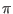
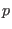

(Highly quoted papers are denoted by an asterisk)
Submitted:
- 464.
- Brandenburg, A., & Vishniac, E. T.: 2024, ``Magnetic helicity fluxes in dynamos from rotating inhomogeneous turbulence,'' Astrophys. J., to be submitted
(arXiv:2412.17402, ADS, HTML, PDF)
- 463.
- Vachaspati, T., & Brandenburg, A.: 2024, ``Spectra of magnetic fields from electroweak symmetry breaking,'' Phys. Rev. D, submitted
(arXiv:2412.00641, ADS, HTML, PDF)
- 462.
- Sharma, R., Brandenburg, A., Subramanian, K., & Vikman, A.: 2024, ``Lattice simulations of axion-U(1) inflation: gravitational waves, magnetic fields, and black holes,'' J. Cosmol. Astropart. Phys., submitted
(arXiv:2411.04854, ADS, PDF)
- 461.
- Neronov, A., Vazza, F., Brandenburg, A., Caprini, C.: 2024, ``Magnetic fields in a gamma-ray beam as a model of Porphyrion,'' Astron. Astrophys., submitted
(arXiv:2411.01640, ADS, PDF)
- 460.
- Dehman, C., & Brandenburg, A.: 2024, ``Reality of Inverse Cascading in Neutron Star Crusts,'' Astron. Astrophys., submitted
(arXiv:2408.08819, ADS, PDF)
DOI number available:
- 459.
- Brandenburg, A., & Banerjee, A.: 2024, ``Turbulent magnetic decay controlled by two conserved quantities,'' J. Plasma Phys., DOI: 10.1017/S0022377824001508
(arXiv:2406.11798, ADS, DOI, HTML, PDF)
Published:
- 458.
- Brandenburg, A., Iarygina, O., Sfakianakis, E. I., & Sharma, R.: 2024, ``Magnetogenesis from axion-SU(2) inflation,'' J. Cosmol. Astropart. Phys. 12, 057
(arXiv:2408.17413, ADS, DOI, PDF)
- 457.
- Mtchedlidze, S., Domínguez-Fernández, P., Du, X., Carretti, E., Vazza, F., O'Sullivan, S. P., Brandenburg, A., & Kahniashvili, T.: 2024, ``Intergalactic medium rotation measure of primordial magnetic fields,'' Astrophys. J. 977, 128
(arXiv:2406.16230, ADS, DOI, PDF)
- 456.
- Schober, J., Rogachevskii, I., & Brandenburg, A.: 2024, ``Efficiency of dynamos from the autonomous generation of a chiral asymmetry,'' Phys. Rev. D 110, 043515
(arXiv:2404.07845, ADS, DOI, PDF)
- 455.
- Brandenburg, A., Neronov, A., & Vazza, F.: 2024, ``Resistively controlled primordial magnetic turbulence decay,'' Astron. Astrophys. 687, A186
(arXiv:2401.08569, ADS, DOI, HTML, PDF, ad)
- 454.
- Iarygina, O., Sfakianakis, E. I., Sharma, R. & Brandenburg, A.: 2024, ``Backreaction of axion-SU(2) dynamics during inflation,'' J. Cosmol. Astropart. Phys. 04, 018
(arXiv:2311.07557, ADS, DOI, HTML, PDF)
- 453.
- Brandenburg, A., Clarke, E., Kahniashvili, T., Long, A. J., & Sun, G.: 2024, ``Relic gravitational waves from the chiral plasma instability in the standard cosmological model,'' Phys. Rev. D 109, 043534
(arXiv:2307.09385, ADS, DOI, HTML, PDF)
- 452.
- Schober, J., Rogachevskii, I., & Brandenburg, A.: 2024, ``Chiral anomaly and dynamos from inhomogeneous chemical potential fluctuations,'' Phys. Rev. Lett. 132, 065101
(arXiv:2307.15118, ADS, HTML, PDF)
- 451.
- Sharma, R., Dahl, J., Brandenburg, A., & Hindmarsh, M.: 2023, ``Shallow relic gravitational wave spectrum with acoustic peak,'' J. Cosmol. Astropart. Phys. 12, 042
(arXiv:2308.12916, ADS, DOI, HTML, PDF)
- 450.
- Brandenburg, A., Sharma, R., & Vachaspati, T.: 2023, ``Inverse cascading for initial MHD turbulence spectra between Saffman and Batchelor,'' J. Plasma Phys. 89, 905890606
(arXiv:2307.04602, ADS, DOI, HTML, PDF)
- 449.
- Carenza, P., Sharma, R., Marsh, M. C. D., Brandenburg, A., Müller, E.: 2023, ``Magnetohydrodynamics predicts heavy-tailed distributions of axion-photon conversion,'' Phys. Rev. D 108, 103029
(arXiv:2208.04333, ADS, DOI, HTML, PDF)
- 448.
- Brandenburg, A., Kamada, K., Mukaida, K., Schmitz, K., & Schober, J.: 2023, ``Chiral magnetohydrodynamics with zero total chirality,'' Phys. Rev. D 108, 063529
(arXiv:2304.06612, ADS, DOI, HTML, PDF)
- 447.
- Brandenburg, A., Elstner, D., Masada, Y., & Pipin, V.: 2023, ``Turbulent processes and mean-field dynamo,'' Spa. Sci. Rev. 219, 55
(arXiv:2303.12425, ADS, DOI, HTML, PDF)
- 446.
- Brandenburg, A., & Protiti, N. N.: 2023, ``Electromagnetic conversion into kinetic and thermal energies,'' Entropy 25, 1270
(arXiv:2308.00662, ADS, DOI, HTML, PDF)
- 445.
- Mizerski, K. A., Yokoi, N., & Brandenburg, A.: 2023, ``Cross-helicity effect on -type dynamo in non-equilibrium turbulence,'' J. Plasma Phys. 89, 905890412
(arXiv:2303.01090, ADS, DOI, HTML, PDF)
- 444.
- Sarin, N., Brandenburg, A., & Haskell, B.: 2023, ``Confronting the neutron star population with inverse cascades,'' Astrophys. J. Lett. 952, L21
(arXiv:2305.14347, ADS, DOI, HTML, PDF)
- 443.
- Brandenburg, A., & Ntormousi, E.: 2023, ``Galactic Dynamos,'' Annu. Rev. Astron. Astrophys. 61, 561-606
(arXiv:2211.03476, ADS, DOI, HTML, PDF)
- 442.
- He, Y., Roper Pol, A., & Brandenburg, A.: 2023, ``Modified propagation of gravitational waves from the early radiation era,'' J. Cosmol. Astropart. Phys. 06, 025
(arXiv:2212.06082, ADS, DOI, HTML, PDF)
- 441.
- Brandenburg, A., & Larsson, G.: 2023, ``Turbulence with magnetic helicity that is absent on average,'' Atmosphere 14, 932
(arXiv:2305.08769, ADS, DOI, HTML, PDF)
- 440.
- Brandenburg, A., Kamada, K., & Schober, J.: 2023, ``Decay law of magnetic turbulence with helicity balanced by chiral fermions,'' Phys. Rev. Res. 5, L022028
(arXiv:2302.00512, ADS, DOI, HTML, PDF, ad)
- 439.
- Brandenburg, A.: 2023, ``Hosking integral in nonhelical Hall cascade,'' J. Plasma Phys. 89, 175890101
(arXiv:2211.14197, ADS, DOI, HTML, PDF)
- 438.
- Mtchedlidze, S., Domínguez-Fernández, P., Du, X., Schmidt, W., Brandenburg, A., Niemeyer, J., & Kahniashvili, T.: 2023, ``Inflationary and phase-transitional primordial magnetic fields in galaxy clusters,'' Astrophys. J. 944, 100
(arXiv:2210.10183, ADS, DOI, PDF)
- 437.
- Brandenburg, A.: 2023, ``Quadratic growth during the COVID-19 pandemic: merging hotspots and reinfections,'' J. Phys. A: Math. Theor. 56, 044002
(arXiv:2206.15459, ADS, DOI, HTML, PDF)
- 436.
- Brandenburg, A., Rogachevskii, I., & Schober, J.: 2023, ``Dissipative magnetic structures and scales in small-scale dynamos,'' Mon. Not. Roy. Astron. Soc. 518, 6367-6375
(arXiv:2209.08717, ADS, DOI, HTML, PDF, Supp)
- 435.
- Brandenburg, A., Zhou, H., & Sharma, R.: 2023, ``Batchelor, Saffman, and Kazantsev spectra in galactic small-scale dynamos,'' Mon. Not. Roy. Astron. Soc. 518, 3312-3325
(arXiv:2207.09414, ADS, DOI, HTML, PDF)
- 434.
- Sharma, R., & Brandenburg, A.: 2022, ``Low frequency tail of gravitational wave spectra from hydromagnetic turbulence,'' Phys. Rev. D 106, 103536
(arXiv:2206.00055, ADS, DOI, HTML, PDF, Supp)
- 433.
- Zhou, H., Sharma, R., & Brandenburg, A.: 2022, ``Scaling of the Hosking integral in decaying magnetically-dominated turbulence,'' J. Plasma Phys. 88, 905880602
(arXiv:2206.07513, ADS, DOI, HTML, PDF)
- 432.
- Sinha, S., Gupta, O., Singh, V., Lekshmi, B., Nandy, D., Mitra, D., Chatterjee, S., Bhattacharya, S., Chatterjee, S., Srivastava, N., Brandenburg, A., & Pal, S.: 2022, ``A comparative analysis of machine-learning models for solar flare forecasting: Identifying high-performing active region flare indicators,'' Astrophys. J. 935, 45
(arXiv:2204.05910, ADS, DOI, PDF)
- 431.
- Li, X.-Y., Mehlig, B., Svensson, G., Brandenburg, A., & Haugen, N. E. L.: 2022, ``Collision fluctuations of lucky droplets with superdroplets,'' J. Atmos. Sci. 79, 1821-1835
(arXiv:1810.07475, ADS, DOI, HTML, PDF)
- 430.
- Käpylä, M. J., Rheinhardt, M., & Brandenburg, A.: 2022, ``Compressible test-field method and its application to shear dynamos,'' Astrophys. J. 932, 8
(arXiv:2106.01107, ADS, DOI, HTML, PDF)
- 429.
- Kahniashvili, T., Clarke, E., Stepp, J., & Brandenburg, A.: 2022, ``Big bang nucleosynthesis limits and relic gravitational wave detection prospects,'' Phys. Rev. Lett. 128, 221301
(arXiv:2111.09541, ADS, DOI, PDF, Supp)
- 428.
- Brandenburg, A., & Ntormousi, E.: 2022, ``Dynamo effect in unstirred self-gravitating turbulence,'' Mon. Not. Roy. Astron. Soc. 513, 2136-2151
(arXiv:2112.03838, ADS, DOI, PDF)
- 427.
- Mtchedlidze, S., Domínguez-Fernández, P., Du, X., Brandenburg, A., Kahniashvili, T., O'Sullivan, S., Schmidt, W., & Brüggen, M.: 2022, ``Evolution of primordial magnetic fields during large-scale structure formation,'' Astrophys. J. 929, 127
(arXiv:2109.13520, ADS, DOI, PDF)
- 426.
- Roper Pol, A., Mandal, A., Brandenburg, A., & Kahniashvili, T.: 2022, ``Polarization of gravitational waves from helical MHD turbulent sources,'' J. Cosmol. Astropart. Phys. 04, 019
(arXiv:2107.05356, ADS, DOI, PDF)
- 425.
- Schober, J., Rogachevskii, I., & Brandenburg, A.: 2022, ``Production of a chiral magnetic anomaly with emerging turbulence and mean-field dynamo action,'' Phys. Rev. Lett. 128, 065002
(arXiv:2107.12945, ADS, DOI, PDF)
- 424.
- Schober, J., Rogachevskii, I., & Brandenburg, A.: 2022, ``Dynamo instabilities in plasmas with inhomogeneous chiral chemical potential,'' Phys. Rev. D 105, 043507
(arXiv:2107.13028, ADS, DOI, PDF)
- 423.
- Haugen, N. E. L., Brandenburg, A., Sandin, C., & Mattsson, L.: 2022, ``Spectral characterisation of inertial particle clustering in turbulence,'' J. Fluid Mech. 934, A37
(arXiv:2105.01539, ADS, DOI, HTML, PDF)
- 422.
- Brandenburg, A., He, Y., & Sharma, R.: 2021, ``Simulations of helical inflationary magnetogenesis and gravitational waves,'' Astrophys. J. 922, 192
(arXiv:2107.12333, ADS, DOI, HTML, PDF)
- 421.
- Brandenburg, A., & Sharma, R.: 2021, ``Simulating relic gravitational waves from inflationary magnetogenesis,'' Astrophys. J. 920, 26
(arXiv:2106.03857, ADS, DOI, HTML, PDF)
- 420.
- Brandenburg, A., & Das, U.: 2021, ``Turbulent radiative diffusion and turbulent Newtonian cooling,'' Phys. Fluids 33, 095125
(arXiv:2010.07046, ADS, DOI, HTML, PDF)
- 419.
- Brandenburg, A., Clarke, E., He, Y., & Kahniashvili, T.: 2021, ``Can we observe the QCD phase transition-generated gravitational waves through pulsar timing arrays?'' Phys. Rev. D 104, 043513
(arXiv:2102.12428, ADS, DOI, HTML, PDF)
- 418.
- He, Y., Brandenburg, A., & Sinha, A.: 2021, ``Spectrum of turbulence-sourced gravitational waves as a constraint on graviton mass,'' J. Cosmol. Astropart. Phys. 07, 015
(arXiv:2104.03192, ADS, HTML, PDF)
- 417.
- Brandenburg, A., Gogoberidze, G., Kahniashvili, T., Mandal, S., & Roper Pol, A., & Shenoy, N.: 2021, ``The scalar, vector, and tensor modes in gravitational wave turbulence simulations,'' Class. Quantum Grav. 38, 145002
(arXiv:2103.01140, ADS, DOI, PDF)
- 416.
- Brandenburg, A., He, Y., Kahniashvili, T., Rheinhardt, M., & Schober, J.: 2021, ``Gravitational waves from the chiral magnetic effect,'' Astrophys. J. 911, 110
(arXiv:2101.08178, ADS, DOI, HTML, PDF)
- 415.
- Blanco, N., Stafford, K., Lavoie, M.-C., Brandenburg, A., Górna, M. W., & Merski, M.: 2021, ``A simple model for the total number of SARS-CoV-2 infections on a national level,'' Epidemiology and Infection 149, e80
(arXiv:2007.02712, ADS, DOI, PDF)
- 414.
- Jakab, P., & Brandenburg, A.: 2021, ``The effect of a dynamo-generated field on the Parker wind,'' Astron. Astrophys. 647, A18
(arXiv:2006.02971, ADS, DOI, HTML, PDF)
- 413.
- Kahniashvili, T., Brandenburg, A., Gogoberidze, G., Mandal, S., & Roper Pol, A.: 2021, ``Circular polarization of gravitational waves from early-universe helical turbulence,'' Phys. Rev. Res. 3, 013193
(arXiv:2011.05556, ADS, DOI, HTML, PDF)
- 412.
- Pencil Code Collaboration: Brandenburg, A., Johansen, A., Bourdin, P. A., Dobler, W., Lyra, W., Rheinhardt, M., Bingert, S., Haugen, N. E. L., Mee, A., Gent, F., Babkovskaia, N., Yang, C.-C., Heinemann, T., Dintrans, B., Mitra, D., Candelaresi, S., Warnecke, J., Käpylä, P. J., Schreiber, A., Chatterjee, P., Käpylä, M. J., Li, X.-Y., Krüger, J., Aarnes, J. R., Sarson, G. R., Oishi, J. S., Schober, J., Plasson, R., Sandin, C., Karchniwy, E., Rodrigues, L. F. S., Hubbard, A., Guerrero, G., Snodin, A., Losada, I. R., Pekkilä, J., & Qian, C.: 2021, ``The Pencil Code, a modular MPI code for partial differential equations and particles: multipurpose and multiuser-maintained,'' J. Open Source Softw. 6, 2807
(arXiv:2009.08231, ADS, DOI, HTML, PDF)
- 411.
- Käpylä, M. J., Álvarez Vizoso, J., Rheinhardt, M., Brandenburg, A., & Singh, N. K.: 2020, ``On the existence of shear-current effects in magnetized burgulence,'' Astrophys. J. 905, 179
(arXiv:2006.05661, ADS, DOI, PDF)
- 410.
- Roper Pol, A., Mandal, S., Brandenburg, A., Kahniashvili, T., & Kosowsky, A.: 2020, ``Numerical Simulations of Gravitational Waves from Early-Universe Turbulence,'' Phys. Rev. D 102, 083512
(arXiv:1903.08585, ADS, DOI, HTML, PDF)
- 409.
- Brandenburg, A.: 2020, ``Piecewise quadratic growth during the 2019 novel coronavirus epidemic,'' Infectious Disease Modelling 5, 681-690
(arXiv:2002.03638, ADS, DOI, HTML, PDF)
- 408.
- Brandenburg, A.: 2020, ``Hall cascade with fractional magnetic helicity in neutron star crusts,'' Astrophys. J. 901, 18
(arXiv:2006.12984, ADS, DOI, HTML, PDF)
- 407.
- Prabhu, A., Brandenburg, A., Käpylä, M. J., & Lagg, A.: 2020, ``Helicity proxies from linear polarisation of solar active regions,'' Astron. Astrophys. 641, A46
(arXiv:2001.10884, ADS, DOI, PDF)
- 406.
- Asplund, J., Johannesson, G., & Brandenburg, A.: 2020, ``On the measurement of handedness in Fermi Large Area Telescope data,'' Astrophys. J. 898, 124
(arXiv:2005.13065, ADS, DOI, PDF)
- 405.
- Brandenburg, A., Durrer, R., Huang, Y., Kahniashvili, T., Mandal, S., & Mukohyama S.: 2020, ``Primordial magnetic helicity evolution with a homogeneous magnetic field from inflation,'' Phys. Rev. D 102, 02353
(arXiv:2005.06449, ADS, DOI, HTML, PDF)
- 404.
- Brandenburg, A., & Furuya, R. S.: 2020, ``Application of a helicity proxy to edge-on galaxies,'' Mon. Not. Roy. Astron. Soc. 496, 4749-4759
(arXiv:2003.07284, ADS, DOI, HTML, PDF)
- 403.
- Pusztai, I., Juno, J., Brandenburg, A., TenBarge, J. M., Hakim, A., Francisquez, M., & Sundström, A.: 2020, ``Dynamo in weakly collisional nonmagnetized plasmas impeded by Landau damping of magnetic fields,'' Phys. Rev. Lett. 124, 255102
(arXiv:2001.11929, ADS, DOI, HTML, PDF)
- 402.
- Brandenburg, A., & Brüggen, M.: 2020, ``Hemispheric handedness in the Galactic synchrotron polarization foreground,'' Astrophys. J. Lett. 896, L14
(arXiv:2003.14178, ADS, DOI, HTML, PDF)
- 401.
- Käpylä, P. J., Rheinhardt, M., Brandenburg, A., & Käpylä, M. J.: 2020, ``Turbulent viscosity and effective magnetic Prandtl number from simulations of isotropically forced turbulence,'' Astron. Astrophys. 636, A93
(arXiv:1901.00787, ADS, DOI, PDF)
- 400.
- Brandenburg, A., & Boldyrev, S.: 2020, ``The turbulent stress spectrum in the inertial and subinertial ranges,'' Astrophys. J. 892, 80
(arXiv:1912.07499, ADS, DOI, PDF)
- 399.
- Brandenburg, A., & Chen, L.: 2020, ``The nature of mean-field generation in three classes of optimal dynamos,'' J. Plasma Phys. 86, 905860110
(arXiv:1911.01712, ADS, DOI, HTML, PDF)
- 398.
- Brandenburg, A., & Scannapieco, E.: 2020, ``Magnetic helicity dissipation and production in an ideal MHD code,'' Astrophys. J. 889, 55
(arXiv:1910.06074, ADS, DOI, HTML, PDF)
- 397.
- Li, X.-Y., Brandenburg, A., Svensson, G., Haugen, N. E. L., Mehlig, B., & Rogachevskii, I.: 2020, ``Condensational and collisional growth of cloud droplets in a turbulent environment,'' J. Atmosph. Sci. 77, 337-353
(arXiv:1807.11859, ADS, DOI, PDF)
- 396.
- Singh, N. K., Raichur, H., Käpylä, M. J., Rheinhardt, M., Brandenburg, A., & Käpylä, P. J.: 2020, ``f-mode strengthening from a localized bipolar subsurface magnetic field,'' Geophys. Astrophys. Fluid Dyn. 114, 196-212
(arXiv:1808.08904, ADS, DOI, HTML, PDF)
- 395.
- Brandenburg, A., & Das, U.: 2020, ``The time step constraint in radiation hydrodynamics,'' Geophys. Astrophys. Fluid Dyn. 114, 162-195
(arXiv:1901.06385, ADS, DOI, HTML, PDF)
- 394.
- Roper Pol, A., Brandenburg, A., Kahniashvili, T., Kosowsky, A., & Mandal, S.: 2020, ``The timestep constraint in solving the gravitational wave equations sourced by hydromagnetic turbulence,'' Geophys. Astrophys. Fluid Dyn. 114, 130-161
(arXiv:1807.05479, ADS, HTML, DOI, PDF)
- 393.
- Schober, J., Brandenburg, A., & Rogachevskii, I.: 2020, ``Chiral fermion asymmetry in high-energy plasma simulations,'' Geophys. Astrophys. Fluid Dyn. 114, 106-129
(arXiv:1808.06624, ADS, HTML, DOI, PDF)
- 392.
- Qian, C., Wang, C., Liu, J., Brandenburg, A., Haugen, N. E. L., & Liberman, M.: 2020, ``Convergence properties of detonation simulations,'' Geophys. Astrophys. Fluid Dyn. 114, 58-76
(arXiv:1902.03816, ADS, DOI, HTML, PDF)
- 391.
- Käpylä, P. J., Gent, F. A., Olspert, N., Käpylä, M. J., & Brandenburg, A.: 2020, ``Sensitivity to luminosity, centrifugal force, and boundary conditions in spherical shell convection,'' Geophys. Astrophys. Fluid Dyn. 114, 8-34
(arXiv:1807.09309, ADS, HTML, DOI, PDF)
- 390.
- Brandenburg, A.: 2019, ``A global two-scale helicity proxy from -ambiguous solar magnetic fields,'' Astrophys. J. 883, 119
(arXiv:1906.03877, ADS, DOI, HTML, PDF)
- 389.
- Gosain, S., & Brandenburg, A.: 2019, ``Spectral magnetic helicity of solar active regions between 2006 and 2017,'' Astrophys. J. 882, 80
(arXiv:1902.11273, ADS, HTML, PDF)
- 388.
- Brandenburg, A.: 2019, ``The limited roles of autocatalysis and enantiomeric cross-inhibition in achieving homochirality in dilute systems,'' Orig. Life Evol. Biosph. 49, 49-60
(arXiv:1903.07855, ADS, DOI, PDF)
- 387.
- Brandenburg, A., & Rempel, M.: 2019, ``Reversed dynamo at small scales and large magnetic Prandtl number,'' Astrophys. J. 879, 57
(arXiv:1903.11869, ADS, DOI, PDF)
- 386.
- Brandenburg, A.: 2019, ``Ambipolar diffusion in large Prandtl number turbulence,'' Mon. Not. Roy. Astron. Soc. 487, 2673-2684
(arXiv:1903.08976, ADS, DOI, HTML, PDF)
- 385.
- Käpylä, P. J., Viviani, M., Käpylä, M. J., Brandenburg, A., & Spada, F.: 2019, ``Effects of a subadiabatic layer on convection and dynamos in spherical wedge simulations,'' Geophys. Astrophys. Fluid Dyn. 113, 149-183
(arXiv:1803.05898, ADS, DOI, PDF)
- 384.
- Schober, J., Brandenburg, A., Rogachevskii, I., & Kleeorin, N.: 2019, ``Energetics of turbulence generated by chiral MHD dynamos,'' Geophys. Astrophys. Fluid Dyn. 113, 107-130
(arXiv:1803.06350, ADS, DOI, PDF)
- 383.
- Brandenburg, A., Kahniashvili, T., Mandal, S., Roper Pol, A., Tevzadze, A. G., & Vachaspati, T.: 2019, ``Dynamo effect in decaying helical turbulence,'' Phys. Rev. Fluids, 4, 024608
(arXiv:1710.01628, ADS, DOI, PDF, ad)
- 382.
- Li, X.-Y., Svensson, G., Brandenburg, A., & Haugen, N. E. L.: 2019, ``Cloud droplet growth due to supersaturation fluctuations in stratiform clouds,'' Atmosph. Chem. Phys. 19, 639-648
(arXiv:1806.10529, ADS, HTML, DOI, PDF)
- 381.
- Bracco, A., Candelaresi, S., Del Sordo, F., & Brandenburg, A.: 2019, ``Is there a left-handed magnetic field in the solar neighborhood? Exploring helical magnetic fields in the interstellar medium through dust polarization power spectra,'' Astron. Astrophys. 621, A97
(arXiv:1807.10188, ADS, DOI, PDF)
- 380.
- Brandenburg, A., Bracco, A., Kahniashvili, T., Mandal, S., Roper Pol, A., Petrie, G. J. D., & Singh, N. K.: 2019, ``E and B polarizations from inhomogeneous and solar surface turbulence,'' Astrophys. J. 870, 87
(arXiv:1807.11457, ADS, DOI, PDF)
- 379.
- Losada, I. R., Warnecke, J., Brandenburg, A., Kleeorin, N., & Rogachevskii, I.: 2019, ``Magnetic bipoles in rotating turbulence with coronal envelope,'' Astron. Astrophys. 621, A61
(arXiv:1803.04446, ADS, DOI, PDF)
- 378.
- Brandenburg, A.: 2018, ``Magnetic helicity and fluxes in an inhomogeneous alpha squared dynamo,'' Astron. Nachr. 339, 631-640
(arXiv:1901.07552, ADS, DOI, PDF)
- 377.
- Brandenburg, A., & Oughton, S.: 2018, ``Cross-helically forced and decaying hydromagnetic turbulence,'' Astron. Nachr. 339, 641-646
(arXiv:1901.05875, ADS, DOI, PDF)
- 376.
- Bourdin, Ph.-A., & Brandenburg, A.: 2018, ``Magnetic helicity from multipolar regions on the solar surface,'' Astrophys. J. 869, 3
(arXiv:1804.04160, ADS, DOI, PDF)
- 375.
- Bourdin, Ph.-A., Singh, N. K., & Brandenburg, A.: 2018, ``Magnetic helicity reversal in the corona at small plasma beta,'' Astrophys. J. 869, 2
(arXiv:1804.04153, ADS, DOI, PDF)
- 374.
- Rogachevskii, I., Kleeorin, N., & Brandenburg, A.: 2018, ``Compressibility effects in turbulent MHD and passive scalar transport: mean-field theory,'' J. Plasma Phys. 84, 735840502
(arXiv:1801.01804, ADS, DOI, PDF)
- 373.
- Li, X.-Y., Brandenburg, A., Svensson, G., Haugen, N. E. L., Mehlig, B., & Rogachevskii, I.: 2018, ``Effect of turbulence on collisional growth of cloud droplets,'' J. Atmosph. Sci. 75, 3469-3487
(arXiv:1711.10062, ADS, DOI, PDF)
- 372.
- Viviani, M., Warnecke, J., Käpylä, M. J., Käpylä, P. J., Olspert, N., Cole-Kodikara, E. M., Lehtinen, J. J., & Brandenburg, A.: 2018, ``Transition from axi- to nonaxisymmetric dynamo modes in spherical convection models of solar-like stars,'' Astron. Astrophys. 616, A160
(arXiv:1710.10222, ADS, DOI, PDF)
- 371.
- Brandenburg, A.: 2018, ``Advances in mean-field dynamo theory and applications to astrophysical turbulence,'' J. Plasma Phys. 84, 735840404
(arXiv:1801.05384, ADS, DOI, PDF)
- 370.
- Singh, N. K., Käpylä, M. J., Brandenburg, A., Käpylä, P. J., Lagg, A., & Virtanen, I.: 2018, ``Bihelical spectrum of solar magnetic helicity and its evolution,'' Astrophys. J. 863, 182
(arXiv:1804.04994, ADS, DOI, PDF)
- 369.
- Brandenburg, A., Durrer, R., Kahniashvili, T., Mandal, S., & Yin, W. W.: 2018, ``Statistical properties of scale-invariant helical magnetic fields and applications to cosmology,'' J. Cosmol. Astropart. Phys. 08, 034
(arXiv:1804.01177, ADS, DOI, PDF)
- 368.
- Zhang, H., & Brandenburg, A.: 2018, ``Solar kinetic energy and cross helicity spectra,'' Astrophys. J. Lett. 862, L17
(arXiv:1804.10321, ADS, DOI, PDF)
- 367.
- Brandenburg, A., Haugen, N. E. L., Li, X.-Y., & Subramanian, K.: 2018, ``Varying the forcing scale in low Prandtl number dynamos,'' Mon. Not. Roy. Astron. Soc. 479, 2827-2833
(arXiv:1805.01249, ADS, DOI, PDF)
- 366.
- Käpylä, P. J., Käpylä, M. J., & Brandenburg, A.: 2018, ``Small-scale dynamos in simulations of stratified turbulent convection,'' Astron. Nachr. 339, 127-133
(arXiv:1802.09607, ADS, DOI, PDF)
- 365.
- Brandenburg, A., & Chatterjee, P.: 2018, ``Strong nonlocality variations in a spherical mean-field dynamo,'' Astron. Nachr. 339, 118-126
(arXiv:1802.04231, ADS, DOI, HTML, PDF)
- 364.
- Schober, J., Rogachevskii, I., Brandenburg, A., Boyarsky, A., Fröhlich, J., Ruchayskiy, O., & Kleeorin, N.: 2018, ``Laminar and turbulent dynamos in chiral magnetohydrodynamics. II. Simulations,'' Astrophys. J. 858, 124
(arXiv:1711.09733, ADS, DOI, PDF)
- 363.
- Bushby, P. J., Käpylä, P. J., Masada, Y., Brandenburg, A., Favier, B., Guervilly, C., & Käpylä, M. J.: 2018, ``Large-scale dynamos in rapidly rotating plane layer convection,'' Astron. Astrophys. 612, A97
(arXiv:1710.03174, ADS, DOI, PDF)
- 362.
- Brandenburg, A., & Giampapa, M. S.: 2018, ``Enhanced stellar activity for slow antisolar differential rotation?'' Astrophys. J. Lett. 855, L22
(arXiv:1802.08689, ADS, DOI, PDF)
- 361.
- Perri, B., & Brandenburg, A.: 2018, ``Spontaneous flux concentrations from the negative effective magnetic pressure instability beneath a radiative stellar surface,'' Astron. Astrophys. 609, A99
(arXiv:1701.03018, ADS, DOI, PDF)
- 360.
- Warnecke, J., Rheinhardt, M., Käpylä, P. J., Käpylä, M. J., & Brandenburg, A.: 2018, ``Turbulent transport coefficients in spherical wedge dynamo simulations of solar-like stars,'' Astron. Astrophys. 609, A51
(arXiv:1601.03730, ADS, DOI, PDF)
- 359.
- Brandenburg, A., Kahniashvili, T., Mandal, S., Roper Pol, A., Tevzadze, A. G., & Vachaspati, T.: 2017, ``Evolution of hydromagnetic turbulence from the electroweak phase transition,'' Phys. Rev. D 96, 123528
(arXiv:1711.03804, ADS, DOI, PDF)
- 358.
- Kahniashvili, T., Brandenburg, A., Durrer, R., Tevzadze, A. G., & Yin, W.: 2017, ``Scale-invariant helical magnetic field evolution and the duration of inflation,'' J. Cosmol. Astropart. Phys. 12, 002
(arXiv:1610.03139, ADS, DOI, PDF)
- 357.
- Singh, N. K., Rogachevskii, I., & Brandenburg, A.: 2017, ``Enhancement of small-scale turbulent dynamo by large-scale shear,'' Astrophys. J. Lett. 850, L8
(arXiv:1610.07215, ADS, DOI, PDF)
- 356.
- Brandenburg, A., Schober, J., & Rogachevskii, I.: 2017, ``The contribution of kinetic helicity to turbulent magnetic diffusivity,'' Astron. Nachr. 338, 790-793
(arXiv:1706.03421, ADS, DOI, PDF)
- 355.
- Rogachevskii, I., Ruchayskiy, O., Boyarsky, A., Fröhlich, J., Kleeorin, N., Brandenburg, A., & Schober, J.: 2017, ``Laminar and turbulent dynamos in chiral magnetohydrodynamics. I. Theory,'' Astrophys. J. 846, 153
(arXiv:1705.00378, ADS, DOI, PDF)
- 354.
- Cameron, R. H., Dikpati, M., & Brandenburg, A.: 2017, ``The global solar dynamo,'' Spa. Sci. Rev. 210, 367-395
(arXiv:1602.01754, ADS, DOI, PDF)
- 353.
- Käpylä, P. J., Rheinhardt, M., Brandenburg, A., Arlt, R., Käpylä, M. J., Lagg, A., Olspert, N., & Warnecke, J.: 2017, ``Extended subadiabatic layer in simulations of overshooting convection,'' Astrophys. J. Lett. 845, L23
(arXiv:1703.06845, ADS, DOI, PDF)
- 352.
- Brandenburg, A., Schober, J., Rogachevskii, I., Kahniashvili, T., Boyarsky, A., Fröhlich, J., Ruchayskiy, O., & Kleeorin, N.: 2017, ``The turbulent chiral magnetic cascade in the early universe,'' Astrophys. J. Lett. 845, L21
(arXiv:1707.03385, ADS, DOI, PDF)
- 351.
- Brandenburg, A., Ashurova, M. B., & Jabbari, S.: 2017, ``Compensating Faraday depolarization by magnetic helicity in the solar corona,'' Astrophys. J. Lett. 845, L15
(arXiv:1706.09540, ADS, DOI, PDF)
- 350.
- Brandenburg, A., Mathur, S., & Metcalfe, T. S.: 2017, ``Evolution of coexisting long and short period stellar activity cycles,'' Astrophys. J. 845, 79
(arXiv:1704.09009, ADS, DOI, PDF)
- 349.
- Li, X.-Y., Brandenburg, A., Haugen, N. E. L., & Svensson, G.: 2017, ``Eulerian and Lagrangian approaches to multidimensional condensation and collection,'' J. Adv. Model. Earth Syst. 9, 1116-1137
(arXiv:1604.08169, ADS, DOI, HTML, PDF)
- 348.
- Jabbari, S., Brandenburg, A., Kleeorin, N., & Rogachevskii, I.: 2017, ``Sharp magnetic structures from dynamos with density stratification,'' Mon. Not. Roy. Astron. Soc. 467, 2753-2765
(arXiv:1607.08897, ADS, DOI, PDF)
- 347.
- Käpylä, P. J., Käpylä, M. J., Olspert, N., Warnecke, J., & Brandenburg, A.: 2017, ``Convection-driven spherical shell dynamos at varying Prandtl numbers,'' Astron. Astrophys. 599, A4
(arXiv:1605.05885, ADS, DOI, PDF)
- 346.
- Brandenburg, A.: 2017, ``Analytic solution of an oscillatory migratory alpha squared stellar dynamo,'' Astron. Astrophys. 598, A117
(arXiv:1611.02671, ADS, DOI, PDF)
- 345.
- Brandenburg, A., Petrie, G. J. D., & Singh, N. K.: 2017, ``Two-scale analysis of solar magnetic helicity,'' Astrophys. J. 836, 21
(arXiv:1610.05410, ADS, DOI, PDF)
- 344.
- Brandenburg, A., & Kahniashvili, T.: 2017, ``Classes of hydrodynamic and magnetohydrodynamic turbulent decay,'' Phys. Rev. Lett. 118, 055102
(arXiv:1607.01360, ADS, DOI, PDF, Supp)
- 343.
- Brandenburg, A., Rogachevskii, I., & Kleeorin, N.: 2016, ``Magnetic concentrations in stratified turbulence: the negative effective magnetic pressure instability,'' New J. Phys. 18, 125011
(arXiv:1610.03459, ADS, DOI, PDF)
- 342.
- Warnecke, J., Käpylä, P. J., Käpylä, M. J., & Brandenburg, A.: 2016, ``Influence of a coronal envelope as a free boundary to global convective dynamo simulations,'' Astron. Astrophys. 596, A115
(arXiv:1503.05251, ADS, DOI, PDF)
- 341.
- Singh, N. K., Raichur, H., & Brandenburg, A.: 2016, ``High-wavenumber solar f-mode strengthening prior to active region formation,'' Astrophys. J. 832, 120
(arXiv:1601.00629, ADS, DOI, PDF)
- 340.
- Brandenburg, A.: 2016, ``Stellar mixing length theory with entropy rain,'' Astrophys. J. 832, 6
(arXiv:1504.03189, ADS, DOI, PDF)
- 339.
- Cole, E., Brandenburg, A., Käpylä, P. J., & Käpylä, M. J.: 2016, ``Robustness of oscillatory alpha squared dynamos in spherical wedges,'' Astron. Astrophys. 593, A134
(arXiv:1601.05246, ADS, DOI, PDF)
- 338.
- Kahniashvili, T., Brandenburg, A., & Tevzadze, A. G.: 2016, ``The evolution of primordial magnetic fields since their generation,'' Phys. Scr. 91, 104008
(arXiv:1507.00510, ADS, DOI, PDF)
- 337.
- Bhat, P., Subramanian, K., & Brandenburg, A.: 2016, ``A unified large/small-scale dynamo in helical turbulence,'' Mon. Not. Roy. Astron. Soc. 461, 240-247
(arXiv:1508.02706, ADS, DOI, PDF)
- 336.
- Jabbari, S., Brandenburg, A., Mitra, D., Kleeorin, N., & Rogachevskii, I.: 2016, ``Turbulent reconnection of magnetic bipoles in stratified turbulence,'' Mon. Not. Roy. Astron. Soc. 459, 4046-4056
(arXiv:1601.08167, ADS, DOI, PDF)
- 335.
- Warnecke, J., Losada, I. R., Brandenburg, A., Kleeorin, N., & Rogachevskii, I.: 2016, ``Bipolar region formation in stratified two-layer turbulence,'' Astron. Astrophys. 589, A125
(arXiv:1502.03799, ADS, DOI, PDF)
- 334.
- Käpylä, M. J., Käpylä, P. J., Olspert, N., Brandenburg, A., Warnecke, J., Karak, B. B., & Pelt, J.: 2016, ``Multiple dynamo modes as a mechanism for long-term solar activity variations,'' Astron. Astrophys. 589, A56
(arXiv:1507.05417, ADS, DOI, HTML, PDF)
- 333.
- Käpylä, P. J., Brandenburg, A., Kleeorin, N., Käpylä, M. J., & Rogachevskii, I.: 2016, ``Magnetic flux concentrations from turbulent stratified convection,'' Astron. Astrophys. 588, A150
(arXiv:1511.03718, ADS, DOI, PDF)
- 332.
- Yokoi, N., & Brandenburg, A.: 2016, ``Large-scale flow generation by inhomogeneous helicity,'' Phys. Rev. E 93, 033125
(arXiv:1511.08983, ADS, DOI, PDF)
- 331.
- Zhang, H., Brandenburg, A., & Sokoloff, D. D.: 2016, ``Evolution of magnetic helicity and energy spectra of solar active regions,'' Astrophys. J. 819, 146
(arXiv:1503.00846, ADS, DOI, PDF)
- 330.
- Brandenburg, A.: 2016, ``A new twist in simulating solar flares,'' Physics 9, 26
(arXiv:1603.01917, ADS, DOI, PDF)
- 329.
- Bhat, P., & Brandenburg, A.: 2016, ``Hydraulic effects in a radiative atmosphere with ionization,'' Astron. Astrophys. 587, A90
(arXiv:1411.6610, ADS, DOI, PDF)
- 328.
- Karak, B. B., & Brandenburg, A.: 2016, ``Is the small-scale magnetic field correlated with the dynamo cycle?'' Astrophys. J. 816, 28
(arXiv:1505.06632, ADS, DOI, PDF)
- 327.
- Miesch, M., Matthaeus, W., Brandenburg, A., Petrosyan, A., Pouquet, A., Cambon, C., Jenko, F., Uzdensky, D., Stone, J., Tobias, S., Toomre, J., & Velli, M.: 2015, ``Large-eddy simulations of magnetohydrodynamic turbulence in space and astrophysics,'' Spa. Sci. Rev. 194, 97-137
(arXiv:1505.01808, ADS, DOI, PDF)
- 326.
- Andrievsky, A., Brandenburg, A., Noullez, A., & Zheligovsky, V.: 2015, ``Negative magnetic eddy diffusivities from the test-field method and multiscale stability theory,'' Astrophys. J. 811, 135
(arXiv:1501.04465, ADS, DOI, PDF)
- 325.
- Jabbari, S., Brandenburg, A., Kleeorin, N., Mitra, D., & Rogachevskii, I.: 2015, ``Bipolar magnetic spots from dynamos in stratified spherical shell turbulence,'' Astrophys. J. 805, 166
(arXiv:1411.4912, ADS, DOI, PDF)
- 324.
- Karak, B. B., Kitchatinov, L. L., & Brandenburg, A.: 2015, ``Hysteresis between distinct modes of turbulent dynamos,'' Astrophys. J. 803, 95
(arXiv:1411.0485, ADS, DOI, PDF)
- 323.
- Karak, B. B., Käpylä, M. J., Käpylä, P. J., Brandenburg, A., Olspert, N., & Pelt, J.: 2015, ``Magnetically controlled stellar differential rotation near the transition from solar to anti-solar profiles,'' Astron. Astrophys. 576, A26
(arXiv:1407.0984, ADS, DOI, PDF)
- 322.
- Brandenburg, A., Kahniashvili, T., & Tevzadze, A. G.: 2015, ``Nonhelical inverse transfer of a decaying turbulent magnetic field,'' Phys. Rev. Lett. 114, 075001
(arXiv:1404.2238, ADS, DOI, PDF, Supp)
- 321.
- Singh, N. K., Brandenburg, A., Chitre, S. M., & Rheinhardt, M.: 2015, ``Properties of - and -modes in hydromagnetic turbulence,'' Mon. Not. Roy. Astron. Soc. 447, 3708-3722
(arXiv:1404.3246, ADS, DOI, PDF)
- 320.
- Brandenburg, A., Hubbard, A., & Käpylä, P. J.: 2015, ``Dynamical quenching with non-local alpha and downward pumping,'' Astron. Nachr. 336, 91-96
(arXiv:1412.0997, ADS, DOI, PDF)
- 319.
- Barekat, A., & Brandenburg, A.: 2014, ``Near-polytropic stellar simulations with a radiative surface,'' Astron. Astrophys. 571, A68
(arXiv:1308.1660, ADS, DOI, PDF)
- 318.
- Warnecke, J., Käpylä, P. J., Käpylä, M. J., & Brandenburg, A.: 2014, ``On the cause of solar-like equatorward migration in global convective dynamo simulations,'' Astrophys. J. Lett. 796, L12
(arXiv:1409.3213, ADS, DOI, PDF)
- 317.
- Subramanian, K., & Brandenburg, A.: 2014, ``Traces of large-scale dynamo action in the kinematic stage,'' Mon. Not. Roy. Astron. Soc. 445, 2930-2940
(arXiv:1408.4416, ADS, DOI, PDF)
- 316.
- Singh, N. K., Brandenburg, A., & Rheinhardt, M.: 2014, ``Fanning out of the solar -mode in presence of nonuniform magnetic fields?'' Astrophys. J. Lett. 795, L8
(arXiv:1407.0356, ADS, DOI, PDF)
- 315.
- Käpylä, P. J., Käpylä, M. J., & Brandenburg, A.: 2014, ``Confirmation of bistable stellar differential rotation profiles,'' Astron. Astrophys. 570, A43
(arXiv:1401.2981, ADS, DOI, PDF)
- 314.
- Karak, B. B., Rheinhardt, M., Brandenburg, A., Käpylä, P. J., & Käpylä, M. J.: 2014, ``Quenching and anisotropy of hydromagnetic turbulent transport,'' Astrophys. J. 795, 16
(arXiv:1406.4521, ADS, DOI, PDF)
- 313.
- Mitra, D., Brandenburg, A., Kleeorin, N., Rogachevskii, I.: 2014, ``Intense bipolar structures from stratified helical dynamos,'' Mon. Not. Roy. Astron. Soc. 445, 761-769
(arXiv:1404.3194, ADS, DOI, PDF)
- 312.
- Jabbari, S., Brandenburg, A., Losada, I. R., Kleeorin, N., & Rogachevskii, I.: 2014, ``Magnetic flux concentrations from dynamo-generated fields,'' Astron. Astrophys. 568, A112
(arXiv:1401.6107, ADS, DOI, PDF)
- 311.
- Candelaresi, S., Hillier, A., Maehara, H., Brandenburg, A., & Shibata, K.: 2014, ``Superflare occurrence and energies on G-, K- and M-type dwarfs,'' Astrophys. J. 792, 67
(arXiv:1405.1453, ADS, DOI, PDF)
- 310.
- Modestov, M., Bychkov, V., Brodin, G., Marklund, M., & Brandenburg, A.: 2014, ``Evolution of magnetic field generated by the Kelvin-Helmholtz instability,'' Phys. Plasmas 21, 072126
(arXiv:1402.2761, ADS, DOI, PDF)
- 309.
- Väisälä, M. S., Brandenburg, A., Mitra, D., Käpylä, P. J., & Mantere, M. J.: 2014, ``Quantifying the effect of turbulent magnetic diffusion on the growth rate of the magneto-rotational instability,'' Astron. Astrophys. 567, A139
(arXiv:1310.3157, ADS, DOI, PDF)
- 308.
- Brandenburg, A.: 2014, ``Magnetic Prandtl number dependence of the kinetic-to-magnetic dissipation ratio,'' Astrophys. J. 791, 12
(arXiv:1404.6964, ADS, DOI, PDF)
- 307.
- Mitra, D., Brandenburg, A., Dasgupta, D., Niklasson, E., & Ram, A.: 2014, ``Particle energization through time-periodic helical magnetic fields,'' Phys. Rev. E 89, 042919
(arXiv:1306.0151, ADS, DOI, PDF)
- 306.
- Rheinhardt, M., Devlen, E., Rädler, K.-H., & Brandenburg, A.: 2014, ``Mean-field dynamo action from delayed transport,'' Mon. Not. Roy. Astron. Soc. 441, 116-126
(arXiv:1401.5026, ADS, DOI, PDF)
- 305.
- Brandenburg, A., & Stepanov, R.: 2014, ``Faraday signature of magnetic helicity from reduced depolarization,'' Astrophys. J. 786, 91
(arXiv:1401.4102, ADS, DOI, PDF)
- 304.
- Losada, I. R., Brandenburg, A., Kleeorin, N., & Rogachevskii, I.: 2014, ``Magnetic flux concentrations in a polytropic atmosphere,'' Astron. Astrophys. 564, A2
(arXiv:1307.4945, ADS, DOI, PDF)
- 303.
- Zhang, H., Brandenburg, A., & Sokoloff, D. D.: 2014, ``Magnetic helicity and energy spectra of a solar active region,'' Astrophys. J. Lett. 784, L45
(arXiv:1311.2432, ADS, DOI, PDF)
- 302.
- Rüdiger, G., & Brandenburg, A.: 2014, ``The alpha effect in a turbulent liquid-metal plane Couette flow,'' Phys. Rev. E 89, 033009
(arXiv:1201.0652, ADS, DOI, PDF)
- 301.
- Brandenburg, A., Gressel, O., Jabbari, S., Kleeorin, N., & Rogachevskii, I.: 2014, ``Mean-field and direct numerical simulations of magnetic flux concentrations from vertical field,'' Astron. Astrophys. 562, A53
(arXiv:1309.3547, ADS, DOI, PDF)
- 300.
- Cole, E., Käpylä, P. J., Mantere, M. J., & Brandenburg, A.: 2014, ``An azimuthal dynamo wave in spherical shell convection,'' Astrophys. J. Lett. 780, L22
(arXiv:1309.6802, ADS, DOI, PDF)
- 299.
- Warnecke, J., Käpylä, P. J., Mantere, M. J., & Brandenburg, A.: 2013, ``Spoke-like differential rotation in a convective dynamo with a coronal envelope,'' Astrophys. J. 778, 141
(arXiv:1301.2248, ADS, DOI, PDF)
- 298.
- Käpylä, P. J., Mantere, M. J., Cole, E., Warnecke, J., & Brandenburg, A.: 2013, ``Effects of enhanced stratification on equatorward dynamo wave propagation,'' Astrophys. J. 778, 41
(arXiv:1301.2595, ADS, DOI, PDF)
- 297.
- Brandenburg, A., & Lazarian, A.: 2013, ``Astrophysical hydromagnetic turbulence,'' Spa. Sci. Rev. 178, 163-200
(arXiv:1307.5496, ADS, DOI, PDF)
- 296.
- Bykov, A. M., Brandenburg, A., Malkov, M. A., & Osipov, S. M.: 2013, ``Microphysics of cosmic ray driven plasma instabilities,'' Spa. Sci. Rev. 178, 201-232
(arXiv:1304.7081, ADS, DOI, PDF)
- 295.
- Warnecke, J., Losada, I. R., Brandenburg, A., Kleeorin, N., & Rogachevskii, I.: 2013, ``Bipolar magnetic structures driven by stratified turbulence with a coronal envelope,'' Astrophys. J. Lett. 777, L37
(arXiv:1308.1080, ADS, DOI, PDF)
- 294.
- Brandenburg, A., Kleeorin, N., & Rogachevskii, I.: 2013, ``Self-assembly of shallow magnetic spots through strongly stratified turbulence,'' Astrophys. J. Lett. 776, L23
(arXiv:1306.4915, ADS, DOI, PDF)
- 293.
- Rempel, E. L., Chian, A. C.-L., Brandenburg, A., Muñoz, P. R., & Shadden, S. C.: 2013, ``Coherent structures and the saturation of a nonlinear dynamo,'' J. Fluid Mech. 729, 309-329
(arXiv:1210.6637, ADS, DOI, PDF)
- 292.
- Kemel, K., Brandenburg, A., Kleeorin, N., Mitra, D., & Rogachevskii, I.: 2013, ``Active region formation through the negative effective magnetic pressure instability,'' Solar Phys. 287, 293-313
(arXiv:1203.1232, ADS, DOI, PDF)
- 291.
- Jabbari, S., Brandenburg, A., Kleeorin, N., Mitra, D., & Rogachevskii, I.: 2013, ``Surface flux concentrations in a spherical alpha squared dynamo,'' Astron. Astrophys. 556, A106
(arXiv:1302.5841, ADS, DOI, PDF)
- 290.
- Losada, I. R., Brandenburg, A., Kleeorin, N., & Rogachevskii, I.: 2013, ``Competition of rotation and stratification in flux concentrations,'' Astron. Astrophys. 556, A83
(arXiv:1212.4077, ADS, DOI, PDF)
- 289.
- Mitra, D., Wettlaufer, J. S., & Brandenburg, A.: 2013, ``Can planetesimals form by collisional fusion?'' Astrophys. J. 773, 120
(arXiv:1306.3672, ADS, DOI, PDF)
- 288.
- Kemel, K., Brandenburg, A., Kleeorin, N., & Rogachevskii, I.: 2013, ``Non-uniformity effects in the negative effective magnetic pressure instability,'' Phys. Scr. T155, 014027
(arXiv:1208.0517, ADS, DOI, PDF)
- 287.
- Svedin, A., Cuéllar, M. C., & Brandenburg, A.: 2013, ``Data assimilation for stratified convection,'' Mon. Not. Roy. Astron. Soc. 433, 2278-2285
(arXiv:1207.7314, ADS, DOI, PDF)
- 286.
- Devlen, E., Brandenburg, A., & Mitra, D.: 2013, ``A mean field dynamo from negative eddy diffusivity,'' Mon. Not. Roy. Astron. Soc. 432, 1651-1657
(arXiv:1212.2626, ADS, DOI, PDF)
- 285.
- Kahniashvili, T., Tevzadze, A. G., Brandenburg, A., & Neronov, A.: 2013, ``Evolution of primordial magnetic fields from phase transitions,'' Phys. Rev. D 87, 083007
(arXiv:1212.0596, ADS, DOI, PDF)
- 284.
- Candelaresi, S., & Brandenburg, A.: 2013, ``Kinetic helicity needed to drive large-scale dynamos'' Phys. Rev. E 87, 043104
(arXiv:1208.4529, ADS, DOI, PDF)
- 283.
- Käpylä, P. J., Mantere, M. J., & Brandenburg, A.: 2013, ``Oscillatory large-scale dynamos from Cartesian convection simulations,'' Geophys. Astrophys. Fluid Dyn. 107, 244-257
(arXiv:1111.6894, ADS, DOI, PDF)
- 282.
- Brandenburg, A., & Rädler, K.-H.: 2013, ``Yoshizawa's cross-helicity effect and its quenching,'' Geophys. Astrophys. Fluid Dyn. 107, 207-217
(arXiv:1112.1237, ADS, DOI, PDF)
- 281.
- Del Sordo, F., Guerrero, G., & Brandenburg, A.: 2013, ``Turbulent dynamo with advective magnetic helicity flux,'' Mon. Not. Roy. Astron. Soc. 429, 1686-1694
(arXiv:1205.3502, ADS, DOI, PDF)
- 280.
- Brandenburg, A., Gressel, O., Käpylä, P. J., Kleeorin, N., Mantere, M. J., Rogachevskii, I.: 2013, ``New scaling for the alpha effect in slowly rotating turbulence,'' Astrophys. J. 762, 127
(arXiv:1208.5004, ADS, DOI, PDF)
- 279.
- Losada, I. R., Brandenburg, A., Kleeorin, N., Mitra, D., & Rogachevskii, I.: 2012, ``Rotational effects on the negative magnetic pressure instability,'' Astron. Astrophys. 548, A49
(arXiv:1207.5392, ADS, DOI, PDF)
- 278.
- Kahniashvili, T., Brandenburg, A., Campanelli, L., Ratra, B., & Tevzadze, A. G.: 2012, ``Evolution of inflation-generated magnetic field through phase transitions,'' Phys. Rev. D 86, 103005
(arXiv:1206.2428, ADS, DOI, PDF)
- 277.
- Tevzadze, A. G., Kisslinger, L., Brandenburg, A., & Kahniashvili, T.: 2012, ``Magnetic fields from QCD phase transitions,'' Astrophys. J. 759, 54
(arXiv:1207.0751, ADS, DOI, PDF)
- 276.
- Warnecke, J., Käpylä, P. J., Mantere, M. J., & Brandenburg, A.: 2012, ``Ejections of magnetic structures above a spherical wedge driven by a convective dynamo with differential rotation,'' Solar Phys. 280, 299-319
(arXiv:1112.0505, ADS, DOI, PDF)
- 275.
- Kemel, K., Brandenburg, A., Kleeorin, N., Mitra, D., & Rogachevskii, I.: 2012, ``Spontaneous formation of magnetic flux concentrations in stratified turbulence,'' Solar Phys. 280, 321-333
(arXiv:1112.0279, ADS, DOI, PDF)
- 274.
- Haugen, N. E. L., Kleeorin, N., Rogachevskii, I., & Brandenburg, A.: 2012, ``Detection of the phenomenon of turbulent thermal diffusion in numerical simulations,'' Phys. Fluids 24, 075106
(arXiv:1101.4188, ADS, DOI, PDF)
- 273.
- Brandenburg, A., Sokoloff, D., & Subramanian, K.: 2012, ``Current status of turbulent dynamo theory: From large-scale to small-scale dynamos,'' Spa. Sci. Rev. 169, 123-157
(arXiv:1203.6195, ADS, DOI, PDF)
- 272.
- Warnecke, J., Brandenburg, A., & Mitra, D.: 2012, ``Magnetic twist: a source and property of space weather,'' J. Spa. Weather Spa. Clim. 2, A11
(arXiv:1203.0959, ADS, DOI, PDF)
- 271.
- Käpylä, P. J., Mantere, M. J., & Brandenburg, A.: 2012, ``Cyclic magnetic activity due to turbulent convection in spherical wedge geometry,'' Astrophys. J. Lett. 755, L22
(arXiv:1205.4719, ADS, DOI, PDF)
- 270.
- Bonanno, A., Brandenburg, A., Del Sordo, F., & Mitra, D.: 2012, ``Breakdown of chiral symmetry during saturation of the Tayler instability,'' Phys. Rev. E 86, 016313
(arXiv:1204.0081, ADS, DOI, PDF)
- 269.
- Snellman, J. E., Rheinhardt, M., Käpylä, P. J., Mantere, M. J., & Brandenburg, A.: 2012, ``Mean-field closure parameters for passive scalar turbulence,'' Phys. Scr. 86, 018406
(arXiv:1112.4777, ADS, DOI, PDF)
- 268.
- Rempel, E. L., Chian, A. C.-L., & Brandenburg, A.: 2012, ``Lagrangian chaos in an ABC-forced nonlinear dynamo,'' Phys. Scr. 86, 018405
(arXiv:1201.4324, ADS, DOI, PDF)
- 267.
- Rogachevskii, I., Kleeorin, N., Brandenburg, A., & Eichler, D.: 2012, ``Cosmic-ray current-driven turbulence and mean-field dynamo effect,'' Astrophys. J. 753, 6
(arXiv:1204.4246, ADS, DOI, PDF)
- 266.
- Käpylä, P. J., Brandenburg, A., Kleeorin, N., Mantere, M. J., & Rogachevskii, I.: 2012, ``Negative effective magnetic pressure in turbulent convection,'' Mon. Not. Roy. Astron. Soc. 422, 2465-2473
(arXiv:1104.4541, ADS, DOI, PDF)
- 265.
- Brandenburg, A., Kemel, K., Kleeorin, N., & Rogachevskii, I.: 2012, ``The negative effective magnetic pressure in stratified forced turbulence,'' Astrophys. J. 749, 179
(arXiv:1005.5700, ADS, DOI, PDF)
- 264.
- Kitchatinov, L. L., & Brandenburg, A.: 2012, ``Transport of angular momentum and chemical species by anisotropic mixing in stellar radiative interiors,'' Astron. Nachr. 333, 230-236
(arXiv:1201.2484, ADS, DOI, PDF)
- 263.
- Chan, C. K., Mitra, D., & Brandenburg, A.: 2012, ``Dynamics of saturated energy condensation in two-dimensional turbulence,'' Phys. Rev. E 85, 036315
(arXiv:1109.6937, ADS, DOI, PDF)
- 262.
- Dosopoulou, F., Del Sordo, F., Tsagas, C. G., & Brandenburg, A.: 2012, ``Vorticity production and survival in viscous and magnetized cosmologies,'' Phys. Rev. D 85, 063514
(arXiv:1112.6164, ADS, DOI, PDF)
- 261.
- Brandenburg, A., & Petrosyan, A.: 2012, ``Reynolds number dependence of kinetic helicity decay in linearly forced turbulence,'' Astron. Nachr. 333, 195-201
(arXiv:1012.1464, ADS, DOI, PDF)
- 260.
- Hubbard, A., & Brandenburg, A.: 2012, ``Catastrophic quenching in alpha-Omega dynamos revisited,'' Astrophys. J. 748, 51
(arXiv:1107.0238, ADS, DOI, PDF)
- 259.
- Brandenburg, A., Rädler, K.-H., & Kemel, K.: 2012, ``Mean-field transport in stratified and/or rotating turbulence,'' Astron. Astrophys. 539, A35
(arXiv:1108.2264, ADS, ADS, DOI, PDF, PDF)
- 258.
- Mitra, D., & Brandenburg, A.: 2012, ``Scaling and intermittency in incoherent alpha-shear dynamo,'' Mon. Not. Roy. Astron. Soc. 420, 2170-2177
(arXiv:1107.2419, ADS, DOI, PDF)
- 257.
- Kemel, K., Brandenburg, A., Kleeorin, N., & Rogachevskii, I.: 2012, ``Properties of the negative effective magnetic pressure instability,'' Astron. Nachr. 333, 95-100
(arXiv:1107.2752, ADS, DOI, PDF)
- 256.
- Guerrero, G., Rheinhardt, M., Brandenburg, A., & Dikpati, M.: 2012, ``Plasma flow versus magnetic feature-tracking speeds in the Sun,'' Mon. Not. Roy. Astron. Soc. 420, L1-L5
(arXiv:1107.4801, ADS, DOI, PDF)
- 255.
- Rheinhardt, M., & Brandenburg, A.: 2012, ``Modeling spatio-temporal nonlocality in mean-field dynamos,'' Astron. Nachr. 333, 71-77
(arXiv:1110.2891, ADS, DOI, HTML, PDF)
- 254.
- Snellman, J. E., Brandenburg, A., Käpylä, P. J., & Mantere, M. J.: 2012, ``Verification of Reynolds stress parameterizations from simulations,'' Astron. Nachr. 333, 78-83
(arXiv:1109.4857, ADS, DOI, PDF)
- 253.
- Käpylä, P. J., Mantere, M. J., & Brandenburg, A.: 2011, ``Effects of stratification in spherical shell convection,'' Astron. Nachr. 332, 883-890
(arXiv:1109.4625, ADS, DOI, PDF)
- 252.
- Kemel, K., Brandenburg, A., & Ji, H.: 2011, ``A model of driven and decaying magnetic turbulence in a cylinder,'' Phys. Rev. E 84, 056407
(arXiv:1106.1129, ADS, DOI, PDF)
- 251.
- Rogachevskii, I., Kleeorin, N., Käpylä, P. J., & Brandenburg, A.: 2011, ``Pumping velocity in homogeneous helical turbulence with shear,'' Phys. Rev. E 84, 056314
(arXiv:1105.5785, ADS, DOI, PDF)
- 250.
- Plasson, R., Brandenburg, A., Jullien, L., & Bersini, H.: 2011, ``Autocatalysis: at the root of self-replication,'' Artif. Life 17, 219-236
(DOI, PDF)
- 249.
- Hubbard, A., Rheinhardt, M. & Brandenburg, A.: 2011, ``The fratricide of alpha-Omega dynamos by their alpha squared siblings,'' Astron. Astrophys. 535, A48
(arXiv:1102.2617, ADS, DOI, PDF)
- 248.
- Rädler, K.-H., Brandenburg, A., Del Sordo, F., & Rheinhardt, M.: 2011, ``Mean-field diffusivities in passive scalar and magnetic transport
in irrotational flows,'' Phys. Rev. E 84, 4
(arXiv:1104.1613, ADS, DOI, PDF)
- 247.
- Brandenburg, A.: 2011, ``Nonlinear small-scale dynamos at low magnetic Prandtl numbers,'' Astrophys. J. 741, 92
(arXiv:1106.5777, ADS, DOI, PDF)
- 246.
- Brandenburg, A., Kemel, K., Kleeorin, N., Mitra, D., & Rogachevskii, I.: 2011, ``Detection of negative effective magnetic pressure instability in turbulence simulations,'' Astrophys. J. Lett. 740, L50
(arXiv:1109.1270, ADS, DOI, HTML, PDF)
- 245.
- Chatterjee, P., Mitra, D., Rheinhardt, M., & Brandenburg, A.: 2011, ``Alpha effect due to buoyancy instability of a magnetic layer,'' Astron. Astrophys. 534, A46
(arXiv:1011.1218, ADS, DOI, PDF)
- 244.
- Warnecke, J., Brandenburg, A., & Mitra, D.: 2011, ``Dynamo-driven plasmoid ejections above a spherical surface,'' Astron. Astrophys. 534, A11
(arXiv:1104.0664, ADS, DOI, PDF)
- 243.
- Chatterjee, P., Mitra, D., Brandenburg, A., & Rheinhardt, M.: 2011, ``Spontaneous chiral symmetry breaking by hydromagnetic buoyancy,'' Phys. Rev. E 84, 025403R
(arXiv:1011.1251, ADS, DOI, PDF)
- 242.
- Bejarano, C., Gomez, D. O., & Brandenburg, A.: 2011, ``Shear-driven instabilities in Hall-magnetohydrodynamic plasmas,'' Astrophys. J. 737, 62
(arXiv:1012.5284, ADS, DOI, PDF)
- 241.
- Candelaresi, S., & Brandenburg, A.: 2011, ``Decay of helical and non-helical magnetic knots,'' Phys. Rev. E 84, 016406
(arXiv:1103.3518, ADS, DOI, PDF)
- 240.
- Plasson, R., Brandenburg, A., Jullien, L., & Bersini, H.: 2011, ``Autocatalyses,'' J. Phys. Chem. A 115, 8073-8085
(arXiv:1006.2634, DOI, PDF)
- 239.
- Brandenburg, A.: 2011, ``Chandrasekhar-Kendall functions in astrophysical dynamos,'' Pramana J. Phys. 77, 67-76
(arXiv:1103.4976, ADS, DOI, PDF)
- 238.
- Käpylä, P. J., Mantere, M. J., Guerrero, G., Brandenburg, A., & Chatterjee, P.: 2011, ``Reynolds stress and heat flux in spherical shell convection,'' Astron. Astrophys. 531, A162
(arXiv:1010.1250, ADS, DOI, PDF)
- 237.
- Rempel, E. L., Chian, A. C.-L., & Brandenburg, A.: 2011, ``Lagrangian coherent structures in a nonlinear dynamo,'' Astrophys. J. 735, L9
(arXiv:1011.6327, ADS, DOI, PDF)
- 236.
- Brandenburg, A., Subramanian, K., Balogh, A., & Goldstein, M. L.: 2011, ``Scale dependence of magnetic helicity in the solar wind,'' Astrophys. J. 734, 9
(arXiv:1101.1709, ADS, DOI, PDF)
- 235.
- Del Sordo, F., & Brandenburg, A.: 2011, ``Vorticity production through rotation, shear, and baroclinicity,'' Astron. Astrophys. 528, A145
(arXiv:1008.5281, ADS, DOI, PDF)
- 234.
- Brandenburg, A., & Nordlund, Å.: 2011, ``Astrophysical turbulence modeling,'' Rep. Prog. Phys. 74, 046901
(arXiv:0912.1340, ADS, DOI, PDF)
- 233.
- Rüdiger, G., Kitchatinov, L. L., & Brandenburg, A.: 2011, ``Cross helicity and turbulent magnetic diffusivity in the solar convection zone,'' Solar Phys. 269, 3-12
(arXiv:1004.4881, ADS, DOI, PDF)
- 232.
- Mitra, D., Moss, D., Tavakol, R., & Brandenburg, A.: 2011, ``Alleviating alpha quenching by solar wind and meridional flow,'' Astron. Astrophys. 526, A138
(arXiv:1008.4226, ADS, DOI, PDF)
- 231.
- Brandenburg, A., Haugen, N. E. L., & Babkovskaia, N.: 2011, ``Turbulent front speed in the Fisher equation: dependence on Damköhler number,'' Phys. Rev. E 83, 016304
(arXiv:1008.5145, ADS, DOI, PDF)
- 230.
- Candelaresi, S., Hubbard, A., Brandenburg, A., & Mitra, D.: 2011, ``Magnetic helicity transport in the advective gauge family,'' Phys. Plasmas 18, 012903
(arXiv:1010.6177, ADS, DOI, PDF)
- 229.
- Hubbard, A., & Brandenburg, A.: 2011, ``Magnetic helicity flux in the presence of shear,'' Astrophys. J. 727, 11
(arXiv:1006.3549, ADS, DOI, PDF)
- 228.
- Brandenburg, A.: 2011, ``Dissipation in dynamos at low and high magnetic Prandtl numbers,'' Astron. Nachr. 332, 51-56
(arXiv:1010.4805, ADS, DOI, PDF)
- 227.
- Chatterjee, P., Guerrero, G., & Brandenburg, A.: 2011, ``Magnetic helicity fluxes in interface and flux transport dynamos,'' Astron. Astrophys. 525, A5
(arXiv:1005.5335, ADS, DOI, PDF)
- 226.
- Babkovskaia, N., Haugen, N. E. L., Brandenburg, A.: 2011, ``A high-order public domain code for direct numerical simulations of turbulent combustion,'' J. Comp. Phys. 230, 1-12
(arXiv:1005.5301, ADS, DOI, PDF)
- 225.
- Brandenburg, A., Chatterjee, P., Del Sordo, F., Hubbard, A., Käpylä, P. J., & Rheinhardt, M.: 2010, ``Turbulent transport in hydromagnetic flows,'' Phys. Scr. T142, 014028
(arXiv:1004.5380, ADS, DOI, PDF)
- 224.
- Guerrero, G., Chatterjee, P., & Brandenburg, A.,: 2010, ``Shear-driven and diffusive helicity fluxes in alpha-Omega dynamos,'' Mon. Not. Roy. Astron. Soc. 409, 1619-1630
(arXiv:1005.4818, ADS, DOI, PDF)
- 223.
- Chatterjee, P., Brandenburg, A., & Guerrero, G.: 2010, ``Can catastrophic quenching be alleviated by separating shear and alpha effect?'' Geophys. Astrophys. Fluid Dyn. 104, 591-599
(arXiv:1005.5708, ADS, DOI, PDF)
- 222.
- Hubbard, A., & Brandenburg, A.: 2010, ``Magnetic helicity fluxes in an alpha squared dynamo embedded in a halo,'' Geophys. Astrophys. Fluid Dyn. 104, 577-590
(arXiv:1004.4591, ADS, DOI, PDF)
- 221.
- Warnecke, J., & Brandenburg, A.: 2010, ``Surface appearance of dynamo-generated large-scale fields,'' Astron. Astrophys. 523, A19
(arXiv:1002.3620, ADS, DOI, PDF)
- 220.
- Rheinhardt, M., & Brandenburg, A.: 2010, ``Test-field method for mean-field coefficients with MHD background,'' Astron. Astrophys. 520, A28
(arXiv:1004.0689, ADS, DOI, PDF)
- 219.
- Käpylä, P. J., Korpi, M. J., & Brandenburg, A.: 2010, ``Open and closed boundaries in large-scale convective dynamos,'' Astron. Astrophys. 518, A22
(arXiv:0911.4120, ADS, DOI, PDF)
- 218.
- Käpylä, P. J., Brandenburg, A., Korpi, M. J., Snellman, J. E., &
Narayan, R.: 2010, ``Angular momentum transport in convectively unstable shear flows,'' Astrophys. J. 719, 67-76
(arXiv:1003.0900, ADS, DOI, PDF)
- 217.
- Mitra, D., Tavakol, R., Käpylä, P. J., & Brandenburg, A.: 2010, ``Oscillatory migrating magnetic fields in helical turbulence
in spherical domains,'' Astrophys. J. Lett. 719, L1-L4
(arXiv:0901.2364, ADS, DOI, PDF)
- 216.
- Madarassy, E. J. M., & Brandenburg, A.: 2010, ``Calibrating passive scalar transport in shear-flow turbulence,'' Phys. Rev. E 82, 016304
(arXiv:0906.3314, ADS, DOI, PDF)
- 215.
- Kahniashvili, T., Brandenburg, A., Tevzadze, A. G., & Ratra, B.: 2010, ``Numerical simulations of the decay of primordial magnetic turbulence,'' Phys. Rev. D 81, 123002
(arXiv:1004.3084, ADS, DOI, PDF)
- 214.
- Del Sordo, F., Candelaresi, S., & Brandenburg, A.: 2010, ``Magnetic field decay of three interlocked flux rings with zero linking number,'' Phys. Rev. E 81, 036401
(arXiv:0910.3948, ADS, DOI, PDF)
- 213.
- Käpylä, P. J., Korpi, M. J., & Brandenburg, A.: 2010, ``The alpha effect in rotating convection with sinusoidal shear,'' Mon. Not. Roy. Astron. Soc. 402, 1458-1466
(arXiv:0908.2423, ADS, DOI, PDF)
- 212.
- Plasson, R., & Brandenburg, A.: 2010, ``Homochirality and the need for energy,'' Orig. Life Evol. Biosph. 40, 93-110
(arXiv:0908.0658, ADS, DOI, PDF)
- 211.
- Brandenburg, A.: 2010, ``Magnetic field evolution in simulations with Euler potentials,'' Mon. Not. Roy. Astron. Soc. 401, 347-354
(arXiv:0907.1906, ADS, DOI, PDF)
- 210.
- Mitra, D., Candelaresi, S., Chatterjee, P., Tavakol, R., & Brandenburg, A.: 2010, ``Equatorial magnetic helicity flux in simulations with different gauges,'' Astron. Nachr. 331, 130-135
(arXiv:0911.0969, ADS, DOI, PDF)
- 209.
- Rädler, K.-H., & Brandenburg, A.: 2010, ``Mean electromotive force proportional to mean flow in mhd turbulence,'' Astron. Nachr. 331, 14-21
(arXiv:0910.0071, ADS, DOI, PDF)
- 208.
- Brandenburg, A., Kleeorin, N., & Rogachevskii, I.: 2010, ``Large-scale magnetic flux concentrations from turbulent stresses,'' Astron. Nachr. 331, 5-13
(arXiv:0910.1835, ADS, DOI, PDF)
- 207.
- Käpylä, P. J., Korpi, M. J., Brandenburg, A., Mitra, D., & Tavakol, R.: 2010, ``Convective dynamos in spherical wedge geometry,'' Astron. Nachr. 331, 73-81
(arXiv:0909.1330, ADS, DOI, PDF)
- 206.
- Hubbard, A., & Brandenburg, A.: 2009, ``Memory effects in turbulent transport,'' Astrophys. J. 706, 712-726
(arXiv:0811.2561, ADS, DOI, PDF)
- 205.
- Brandenburg, A.: 2009, ``The critical role of magnetic helicity in astrophysical dynamos,'' Plasma Phys. Control. Fusion 51, 124043
(arXiv:0909.4377, ADS, DOI, PDF)
- 204.
- Sur, S., & Brandenburg, A.: 2009, ``The role of the Yoshizawa effect in the Archontis dynamo,'' Mon. Not. Roy. Astron. Soc. 399, 273-280
(arXiv:0902.2394, ADS, PDF)
- 203.
- Hubbard, A., Del Sordo, F., Käpylä, P. J., & Brandenburg, A.: 2009, ``The alpha effect with imposed and dynamo-generated magnetic fields,'' Mon. Not. Roy. Astron. Soc. 398, 1891-1899
(arXiv:0904.2773, ADS, PDF)
- 202.
- Brandenburg, A., Candelaresi, S., & Chatterjee, P.: 2009, ``Small-scale magnetic helicity losses from a mean-field dynamo,'' Mon. Not. Roy. Astron. Soc. 398, 1414-1422
(arXiv:0905.0242, ADS, DOI, PDF)
- 201.
- Vermersch, V., & Brandenburg, A.: 2009, ``Shear-driven magnetic buoyancy oscillations,'' Astron. Nachr. 330, 797-806
(arXiv:0909.0324, ADS, PDF)
- *200.
- Käpylä, P. J., Korpi, M. J., & Brandenburg, A.: 2009, ``Alpha effect and turbulent diffusion from convection,'' Astron. Astrophys. 500, 633-646
(arXiv:0812.1792, ADS, PDF)
- 199.
- Käpylä, P. J., & Brandenburg, A.: 2009, ``Turbulent dynamos with shear and fractional helicity,'' Astrophys. J. 699, 1059-1166
(arXiv:0810.2298, ADS, PDF)
- 198.
- Brandenburg, A.: 2009, ``Large-scale dynamos at low magnetic Prandtl numbers,'' Astrophys. J. 697, 1206-1213
(arXiv:0808.0961, ADS, DOI, PDF)
- 197.
- Käpylä, P. J., Korpi, M. J., & Brandenburg, A.: 2009, ``Large-scale dynamos in rigidly rotating turbulent convection,'' Astrophys. J. 697, 1153-1163
(arXiv:0812.3958, ADS, PDF)
- 196.
- Mitra, D., Tavakol, R., Brandenburg, A., & Moss, D.: 2009, ``Turbulent dynamos in spherical shell segments of varying geometrical extent,'' Astrophys. J. 697, 923-933
(arXiv:0812.3106, ADS, PDF)
- 195.
- Brandenburg, A., Svedin, A., & Vasil, G. M.: 2009, ``Turbulent diffusion with rotation or magnetic fields,'' Mon. Not. Roy. Astron. Soc. 395, 1599-1606
(arXiv:0901.2112, ADS, DOI, PDF)
- 194.
- Brandenburg, A.: 2009, ``Advances in theory and simulations of large-scale dynamos,'' Spa. Sci. Rev. 144, 87-104
(arXiv:0901.0329, ADS, DOI, PDF)
- 193.
- Mitra, D., Käpylä, P. J., Tavakol, R., & Brandenburg, A.: 2009, ``Alpha effect and diffusivity in helical turbulence with shear,'' Astron. Astrophys. 495, 1-8
(arXiv:0806.1608, ADS, PDF)
- 192.
- Rädler, K.-H., & Brandenburg, A.: 2009, ``Mean-field effects in the Galloway-Proctor flow,'' Mon. Not. Roy. Astron. Soc. 393, 113-125
(arXiv:0809.0851, ADS, PDF)
- 191.
- Liljeström, A. J., Korpi, M. J., Käpylä, P. J., Brandenburg, A., &
Lyra, W.: 2009, ``Turbulent stresses as a function of shear rate in a local disk model,'' Astron. Nachr. 330, 92-99
(arXiv:0811.2341, ADS, PDF)
- 190.
- Käpylä, P. J., Mitra, D., & Brandenburg, A.: 2009, ``Numerical study of large-scale vorticity generation in shear-flow turbulence,'' Phys. Rev. E 79, 016302
(arXiv:0810.0833, ADS, PDF)
- 189.
- Tilgner, A., & Brandenburg, A.: 2008, ``A growing dynamo from a saturated Roberts flow dynamo,'' Mon. Not. Roy. Astron. Soc. 391, 1477-1481
(arXiv:0808.2141, ADS, PDF)
- *188.
- Käpylä, P. J., Korpi, M. J., & Brandenburg, A.: 2008, ``Large-scale dynamos in turbulent convection with shear,'' Astron. Astrophys. 491, 353-362
(arXiv:0806.0375, ADS, PDF)
- 187.
- Brandenburg, A., Rädler, K.-H., Rheinhardt, M., & Subramanian, K.: 2008, ``Magnetic quenching of alpha and diffusivity tensors in helical turbulence,'' Astrophys. J. Lett. 687, L49-L52
(arXiv:0805.1287, ADS, PDF)
- 186.
- Käpylä, P. J., & Brandenburg, A.: 2008, ``Lambda effect from forced turbulence simulations,'' Astron. Astrophys. 488, 9-23
(arXiv:0806.3751, ADS, PDF)
- 185.
- Brandenburg, A.: 2008, ``The dual role of shear in large-scale dynamos,'' Astron. Nachr. 329, 725-731
(arXiv:0808.0959, ADS, PDF)
- 184.
- Brandenburg, A.: 2008, ``Turbulent protostellar discs,'' Phys. Scr. T130, 014016
(arXiv:0808.0960, ADS, PDF)
- 183.
- Jouve, L., Brun, A. S., Arlt, R., Brandenburg, A., Dikpati, M.,
Bonanno, A., Käpylä, P. J., Moss, D., Rempel, M., Gilman, P.,
Korpi, M. J., & Kosovichev, A. G.: 2008, ``A solar mean field dynamo benchmark,'' Astron. Astrophys. 483, 949-960
(ADS, PDF)
- 182.
- Babkovskaia, N., Brandenburg, A., & Poutanen, J.: 2008, ``Boundary layer on the surface of a neutron star,'' Mon. Not. Roy. Astron. Soc. 386, 1038-1044
(arXiv:0802.1663, ADS, HTML, PDF)
- 181.
- Dib, S., Brandenburg, A., Kim, J., Gopinathan, M.,
& Andre, P.: 2008, ``Core mass function: the role of gravity,'' Astrophys. J. 678, L105-L108
(arXiv:0801.2257, ADS, PDF)
- 180.
- Brandenburg, A., Rädler, K.-H., & Schrinner, M.: 2008, ``Scale dependence of alpha effect and turbulent diffusivity,'' Astron. Astrophys. 482, 739-746
(arXiv:0801.1320, ADS, PDF)
- 179.
- Brandenburg, A., & Spiegel, E. A.: 2008, ``Modeling a Maunder minimum,'' Astron. Nachr. 329, 351-358
(arXiv:0801.2156, ADS, PDF)
- 178.
- Sur, S., Brandenburg, A., & Subramanian, K.: 2008, ``Kinematic alpha effect in isotropic turbulence simulations,'' Mon. Not. Roy. Astron. Soc. 385, L15-L19
(arXiv:0711.3789, ADS, PDF)
- *177.
- Brandenburg, A., Rädler, K.-H., Rheinhardt, M., & Käpylä, P. J.: 2008, ``Magnetic diffusivity tensor and dynamo effects in rotating
and shearing turbulence,'' Astrophys. J. 676, 740-751
(arXiv:0710.4059, ADS, PDF)
- 176.
- Rädler, K.-H., & Brandenburg, A.: 2008, ``Alpha-effect dynamos with zero kinetic helicity,'' Phys. Rev. E 77, 026405
(arXiv:0801.0602, ADS, PDF)
- 175.
- Brandenburg, A., Käpylä, P. J., Mitra, D., Moss, D., & Tavakol, R.: 2007, ``The helicity constraint in spherical shell dynamos,'' Astron. Nachr. 328, 1118-1121
(arXiv:0711.3616, ADS, PDF)
- 174.
- Käpylä, P. J., & Brandenburg, A.: 2007, ``Turbulent viscosity and -effect
from numerical turbulence models,'' Astron. Nachr. 328, 1006-1008
(arXiv:0710.5632, ADS, PDF)
- 173.
- Brandenburg, A., Lehto, H. J., & Lehto, K. M.: 2007, ``Homochirality in an early peptide world,'' Astrobiol. 7, 725-732
(q-bio/0610051, ADS, PDF)
- 172.
- Brandenburg, A., & Käpylä, P. J.: 2007, ``Magnetic helicity effects in astrophysical and laboratory dynamos,'' New J. Phys. 9, 305, 1-24
(arXiv:0705.3507, ADS, PDF)
- 171.
- Brandenburg, A., & Subramanian, K.: 2007, ``Simulations of the anisotropic kinetic and magnetic alpha effects,'' Astron. Nachr. 328, 507-512
(arXiv:0705.3508, ADS, PDF)
- 170.
- Sur, S., Subramanian, K., & Brandenburg, A.: 2007, ``Kinetic and magnetic alpha effects in non-linear dynamo theory,'' Mon. Not. Roy. Astron. Soc. 376, 1238-1250
(astro-ph/0701001, ADS, PDF)
- 169.
- Brandenburg, A., Korpi, M. J., & Mee, A. J.: 2007, ``Thermal instability in shearing and periodic turbulence,'' Astrophys. J. 654, 945-954
(astro-ph/0604244, ADS, DOI, HTML, PDF)
- 168.
- Snodin, A. P., Brandenburg, A., Mee, A. J., & Shukurov, A.: 2006, ``Simulating field-aligned diffusion of a cosmic ray gas,'' Mon. Not. Roy. Astron. Soc. 373, 643-652
(astro-ph/0507176, ADS, PDF)
- 167.
- Subramanian, K., & Brandenburg, A.: 2006, ``Magnetic helicity density and its flux in weakly inhomogeneous turbulence,'' Astrophys. J. 648, L71-L74
(astro-ph/0509392, ADS, PDF)
- 166.
- Haugen, N. E. L., & Brandenburg, A.: 2006, ``Hydrodynamic and hydromagnetic energy spectra from large eddy simulations,'' Phys. Fluids 18, 075106
(astro-ph/0412666, ADS, DOI, HTML, PDF)
- 165.
- Gustafsson, M., Brandenburg, A., Lemaire, J. L., & Field, D.: 2006, ``The nature of turbulence in OMC1 at the star forming scale:
observations and simulations,'' Astron. Astrophys. 454, 815-825
(astro-ph/0512214, ADS, HTML, PDF)
- 164.
- Mee, A. J., & Brandenburg, A.: 2006, ``Turbulence from localized random expansion waves,'' Mon. Not. Roy. Astron. Soc. 370, 415-419
(astro-ph/0602057, ADS, PDF)
- 163.
- Brandenburg, A., & Dintrans, B.: 2006, ``Nonaxisymmetric stability in the shearing sheet approximation,'' Astron. Astrophys. 450, 437-444
(astro-ph/0111313, ADS, PDF)
- 162.
- Brandenburg, A.: 2006, ``Magnetic helicity in primordial and dynamo scenarios of galaxies,'' Astron. Nachr. 327, 123-130
(astro-ph/0601496, ADS, PDF)
- 161.
- Shukurov, A., Sokoloff, D., Subramanian, K., & Brandenburg, A.: 2006, ``Galactic dynamo and helicity losses through fountain flow,'' Astron. Astrophys. 448, L33-L36
(astro-ph/0512592, ADS, PDF)
- 160.
- Heinemann, T., Dobler, W., Nordlund, Å., & Brandenburg, A.: 2006, ``Radiative transfer in decomposed domains,'' Astron. Astrophys. 448, 731-737
(astro-ph/0503510, ADS, PDF)
- *159.
- Dobler, W., Stix, M., & Brandenburg, A.: 2006, ``Convection and magnetic field generation in fully convective spheres,'' Astrophys. J. 638, 336-347
(astro-ph/0410645, ADS, PDF)
- 158.
- von Rekowski, B., & Brandenburg, A.: 2006, ``Stellar dynamo driven wind braking versus disc coupling,'' Astron. Nachr. 327, 53-71
(astro-ph/0504053, ADS, PDF)
- 157.
- Nilsson, M., Brandenburg, A., Andersen, A. C., &
Höfner, S.: 2005, ``Unidirectional polymerization leading to homochirality in the RNA world,'' Int. J. Astrobiol. 4, 233-239
(q-bio/0505041, ADS, PDF)
- 156.
- Brandenburg, A., Andersen, A. C., & Nilsson, M.: 2005, ``Dissociation in a polymerization model of homochirality,'' Orig. Life Evol. Biosph. 35, 507-521
(q-bio/0502008, ADS, PDF)
- 155.
- Brandenburg, A.: 2005, ``Turbulence and its parameterization in accretion discs,'' Astron. Nachr. 326, 787-797
(astro-ph/0510015, ADS, PDF)
- 154.
- Multamäki, T., & Brandenburg, A.: 2005, ``Spatial dynamics of homochiralization,'' Int. J. Astrobiol. 4, 75-80
(q-bio/0505040, ADS, PDF)
- *153.
- Brandenburg, A., & Subramanian, K.: 2005, ``Astrophysical magnetic fields and nonlinear dynamo theory,'' Phys. Rep. 417, 1-209
(astro-ph/0405052, ADS, DOI, PDF)
- 152.
- Brandenburg, A., & Subramanian, K.: 2005, ``Minimal tau approximation and simulations of the alpha effect,'' Astron. Astrophys. 439, 835-843
(astro-ph/0504222, ADS, PDF)
- 151.
- Brandenburg, A., Chan, K. L., Nordlund, Å., & Stein, R. F.: 2005, ``Effect of the radiative background flux in convection,'' Astron. Nachr. 326, 681-692
(astro-ph/0508404, ADS, PDF)
- 150.
- Brandenburg, A., Andersen, A. C., Höfner, S., & Nilsson, M.: 2005, ``Homochiral growth through enantiomeric cross-inhibition,'' Orig. Life Evol. Biosph. 35, 225-241
(q-bio/0401036, ADS, PDF)
- 149.
- Dintrans, B., Brandenburg, A., Nordlund, Å.,
& Stein, R. F.: 2005, ``Spectrum and amplitudes of internal gravity waves excited by penetrative
convection in solar-type stars,'' Astron. Astrophys. 438, 365-376
(astro-ph/0502138, ADS, PDF)
- 148.
- Brandenburg, A., & Subramanian, K.: 2005, ``Strong mean field dynamos require supercritical helicity fluxes,'' Astron. Nachr. 326, 400-408
(astro-ph/0505457, ADS, DOI, PDF)
- 147.
- Christensson, M., Hindmarsh, M., & Brandenburg, A.: 2005, ``Scaling laws in decaying helical 3D magnetohydrodynamic turbulence,'' Astron. Nachr. 326, 393-399
(astro-ph/0209119, ADS, PDF)
- 146.
- Schekochihin, A. A., Haugen, N. E. L., Brandenburg, A., Cowley, S. C., Maron, J. L., & McWilliams, J. C.: 2005, ``The onset of small scale dynamo at small magnetic Prandtl numbers,'' Astrophys. J. 625, L115-L118
(astro-ph/0412594, ADS, PDF)
- *145.
- Brandenburg, A.: 2005, ``The case for a distributed solar dynamo shaped by near-surface shear,'' Astrophys. J. 625, 539-547
(astro-ph/0502275, ADS, DOI, PDF)
- 144.
- Brandenburg, A., Haugen, N. E. L., Käpylä, P. J., & Sandin, C.: 2005, ``The problem of small and large scale fields in the solar dynamo,'' Astron. Nachr. 326, 174-185
(astro-ph/0412364, ADS, PDF)
- 143.
- Brandenburg, A., & Multamäki, T.: 2004, ``How long can left and right handed life forms coexist?'' Int. J. Astrobiol. 3, 209-219
(q-bio/0407008, ADS, PDF)
- 142.
- Subramanian, K., & Brandenburg, A.: 2004, ``Nonlinear current helicity fluxes in turbulent dynamos and alpha quenching,'' Phys. Rev. Lett. 93, 205001
(astro-ph/0408020, ADS, PDF)
- 141.
- Pearson, B. R., Yousef, T. A., Haugen, N. E. L., Brandenburg, A., &
Krogstad, P. Å.: 2004, ``Delayed correlation between turbulent energy dissipation and injection,'' Phys. Rev. E 70, 056301
(physics/0404114, ADS, PDF)
- 140.
- Brandenburg, A., & Sandin, C.: 2004, ``Catastrophic alpha quenching alleviated by helicity flux and shear,'' Astron. Astrophys. 427, 13-21
(astro-ph/0401267, ADS, PDF)
- 139.
- von Rekowski, B., Brandenburg, A., Dobler, W.,
& Shukurov, A.: 2004, ``Outflows from dynamo active protostellar accretion discs,'' Astrophys. Spa. Sci. 292, 493-500
(astro-ph/0306603, ADS, PDF)
- 138.
- Sarson, G. R., Shukurov, A., Nordlund, Å., Gudiksen, B., & Brandenburg, A.: 2004, ``Self-regulating supernovae heating in interstellar medium simulations,'' Astrophys. Spa. Sci. 292, 267-272
(astro-ph/0307013, ADS, PDF)
- 137.
- Haugen, N. E. L., Brandenburg, A., & Dobler, W.: 2004, ``High-resolution simulations of nonhelical MHD turbulence,'' Astrophys. Spa. Sci. 292, 53-60
(astro-ph/0306453, ADS, PDF)
- 136.
- Haugen, N. E. L., & Brandenburg, A.: 2004, ``Suppression of small scale dynamo action by an imposed magnetic field,'' Phys. Rev. E 70, 036408
(astro-ph/0402281, ADS, PDF)
- 135.
- Haugen, N. E. L., Brandenburg, A., & Mee, A. J.: 2004, ``Mach number dependence of the onset of dynamo action,'' Mon. Not. Roy. Astron. Soc. 353, 947-952
(astro-ph/0405453, ADS, PDF)
- 134.
- Haugen, N. E. L., & Brandenburg, A.: 2004, ``Inertial range scaling in numerical turbulence with hyperviscosity,'' Phys. Rev. E 70, 026405
(astro-ph/0402301, ADS, PDF)
- *133.
- Haugen, N. E. L., Brandenburg, A., & Dobler, W.: 2004, ``Simulations of nonhelical hydromagnetic turbulence,'' Phys. Rev. E 70, 016308
(astro-ph/0307059, ADS, DOI, PDF)
- 132.
- Dintrans, B., & Brandenburg, A.: 2004, ``Identification of gravity waves in hydrodynamical simulations,'' Astron. Astrophys. 421, 775-782
(astro-ph/0311094, ADS, PDF)
- 131.
- Brandenburg, A., & Matthaeus, W. H.: 2004, ``Magnetic helicity evolution in a periodic domain with imposed field,'' Phys. Rev. E 69, 056407
(astro-ph/0305373, ADS, PDF)
- 130.
- Yousef, T. A., Haugen, N. E. L., & Brandenburg, A.: 2004, ``Self-similar scaling in decaying numerical turbulence,'' Phys. Rev. E 69, 056303
(astro-ph/0312505, ADS, PDF)
- 129.
- von Rekowski, B., & Brandenburg, A.: 2004, ``Outflows and accretion in a star-disc system with stellar magnetosphere
and disc dynamo,'' Astron. Astrophys. 420, 17-32
(astro-ph/0307201, ADS, PDF)
- 128.
- Johansen, A., Andersen, A. C., & Brandenburg, A.: 2004, ``Simulations of dust-trapping vortices in protoplanetary discs,'' Astron. Astrophys. 417, 361-371
(astro-ph/0310059, ADS, PDF)
- 127.
- Brandenburg, A., Käpylä, P. J., & Mohammed, A.: 2004, ``Non-Fickian diffusion and tau-approximation from numerical turbulence,'' Phys. Fluids 16, 1020-1027
(astro-ph/0306521, ADS, PDF)
- 126.
- Shukurov, A., Sarson, G. S., Nordlund, Å., Gudiksen, B., & Brandenburg, A.: 2004, ``The effects of spiral arms on the multi-phase ISM,'' Astrophys. Spa. Sci. 289, 319-322
(astro-ph/0212260, ADS, PDF)
- 125.
- Brandenburg, A., Blackman, E. G., & Sarson, G. R.: 2003, ``How magnetic helicity ejection helps large scale dynamos,'' Adv. Spa. Sci. 32, 1835-1844
(astro-ph/0305374, ADS, PDF)
- 124.
- Yousef, T. A., Brandenburg, A., & Rüdiger, G.: 2003, ``Turbulent magnetic Prandtl number and magnetic diffusivity quenching from simulations,'' Astron. Astrophys. 411, 321-327
(astro-ph/0302425, ADS, PDF)
- 123.
- Haugen, N. E. L., Brandenburg, A., & Dobler, W.: 2003, ``Is nonhelical hydromagnetic turbulence peaked at small scales?'' Astrophys. J. Lett. 597, L141-L144
(astro-ph/0303372, ADS, DOI, PDF)
- 122.
- Yousef, T. A., & Brandenburg, A.: 2003, ``Relaxation of writhe and twist of a bi-helical magnetic field,'' Astron. Astrophys. 407, 7-12
(astro-ph/0303148, ADS, PDF)
- 121.
- Dobler, W., Haugen, N. E. L., Yousef, T. A., & Brandenburg, A.: 2003, ``Bottleneck effect in three-dimensional turbulence simulations,'' Phys. Rev. E 68, 026304
(astro-ph/0303324, ADS, PDF)
- 120.
- Rädler, K.-H., & Brandenburg, A.: 2003, ``Contributions to the theory of a two-scale homogeneous
dynamo experiment,'' Phys. Rev. E 67, 026401
(physics/0208023, ADS, PDF)
- 119.
- Blackman, E. G., & Brandenburg, A.: 2003, ``Doubly helical coronal ejections from dynamos
and their role in sustaining the solar cycle,'' Astrophys. J. Lett. 584, L99-L102
(astro-ph/0212010, ADS, PDF)
- 118.
- von Rekowski, B., Brandenburg, A., Dobler, W., &,
Shukurov, A.: 2003, ``Structured outflow from a dynamo active accretion disc,'' Astron. Astrophys. 398, 825-844
(astro-ph/0003174, ADS, PDF)
- 117.
- Dintrans, B., Brandenburg, A., Nordlund, Å.,
& Stein, R. F.: 2003, ``Stochastic excitation of gravity waves by overshooting
convection in solar-type stars,'' Astrophys. Spa. Sci. 284, 237-240
(astro-ph/0403093, ADS, PDF)
- 116.
- Ossendrijver, M., Stix, M., Brandenburg, A., &
Rüdiger, G.: 2002, ``Magnetoconvection and dynamo coefficients: II.
Field direction dependent pumping of magnetic field,'' Astron. Astrophys. 394, 735-745
(astro-ph/0202299, ADS, PDF)
- 115.
- Blackman, E. G., & Brandenburg, A.: 2002, ``Dynamic nonlinearity in large scale dynamos with shear,'' Astrophys. J. 579, 359-373
(astro-ph/0204497, ADS, PDF)
- 114.
- Saar, S. H., & Brandenburg, A.: 2002, ``A new look at dynamo cycle amplitudes,'' Astron. Nachr. 323, 357-360
(astro-ph/0207392, ADS, PDF)
- 113.
- Brandenburg, A.& Dobler, W.: 2002, ``Solar and stellar dynamos - latest developments,'' Astron. Nachr. 323, 411-416
(astro-ph/0207393, ADS, PDF)
- 112.
- Brandenburg, A., & Sokoloff, D.: 2002, ``Local and nonlocal magnetic diffusion and alpha-effect
tensors in shear flow turbulence,'' Geophys. Astrophys. Fluid Dyn. 96, 319-344
(astro-ph/0111568, ADS, PDF)
- 111.
- Brandenburg, A., & Dobler, W.: 2002, ``Hydromagnetic turbulence in computer simulations,'' Comp. Phys. Comm. 147, 471-475
(astro-ph/0111569, ADS, PDF)
- 110.
- Fogedby, H. C., & Brandenburg, A.: 2002, ``Solitons in the noisy Burgers equation,'' Phys. Rev. E 66, 016604
(cond-mat/0105100, ADS, PDF)
- 109.
- Brandenburg, A., Dobler, W., & Subramanian, K.: 2002, ``Magnetic helicity in stellar dynamos: new numerical experiments,'' Astron. Nachr. 323, 99-122
(astro-ph/0111567, ADS, PDF)
- 108.
- Dobler, W., Shukurov, A., & Brandenburg, A.: 2002, ``Nonlinear states of the screw dynamo,'' Phys. Rev. E 65, 036311
(astro-ph/0105484, ADS, PDF)
- 107.
- Brandenburg, A., & Sarson, G. R.: 2002, ``The effect of hyperdiffusivity on turbulent dynamos with helicity,'' Phys. Rev. Lett. 88, 055003, 1-4
(astro-ph/0110171, ADS, PDF)
- 106.
- Arlt, R., & Brandenburg, A.: 2001, ``Search for non-helical disc dynamos in simulations,'' Astron. Astrophys. 380, 359-372
(astro-ph/0106557, ADS, PDF)
- 105.
- Brandenburg, A., & von Rekowski, B.: 2001, ``Astrophysical significance of the anisotropic kinetic alpha effect,'' Astron. Astrophys. 379, 1153-1160
(astro-ph/0106280, ADS, PDF)
- 104.
- Christensson, M., Hindmarsh, M., & Brandenburg, A.: 2001, ``Inverse cascade in decaying 3D magnetohydrodynamic turbulence,'' Phys. Rev. E 64, 056405
(astro-ph/0011321, ADS, PDF)
- 103.
- Ossendrijver, M., Stix, M., & Brandenburg, A.: 2001, ``Magnetoconvection and dynamo coefficients: dependence of the
alpha effect on rotation and magnetic field,'' Astron. Astrophys. 376, 713-726
(astro-ph/0108274, ADS, PDF)
- 102.
- Brandenburg, A., Bigazzi, A., & Subramanian, K.: 2001, ``The helicity constraint in turbulent dynamos with shear,'' Mon. Not. Roy. Astron. Soc. 325, 685-692
(astro-ph/0011081, ADS, PDF)
- 101.
- Brandenburg, A.: 2001, ``Magnetic mysteries,'' Science 292, 2440-2441
(ADS, PDF, HTML
- 100.
- Brandenburg, A., & Hazlehurst, J.: 2001, ``Evolution of highly buoyant thermals in a stratified layer,'' Astron. Astrophys. 370, 1092-1102
(astro-ph/0008099, ADS, PDF)
- 99.
- Bardou, A., von Rekowski, B., Dobler, W., Brandenburg, A., &
Shukurov, A.: 2001, ``The effects of vertical outflow on disk dynamos,'' Astron. Astrophys. 370, 635-648
(astro-ph/0011545, ADS, PDF)
- *98.
- Brandenburg, A.: 2001, ``The inverse cascade and nonlinear alpha effect in simulations
of isotropic helical hydromagnetic turbulence,'' Astrophys. J. 550, 824-840
(astro-ph/0006186, ADS, PDF)
- 97.
- Brandenburg, A., & Dobler, W.: 2001, ``Large scale dynamos with helicity loss through boundaries,'' Astron. Astrophys. 369, 329-338
(astro-ph/0012472, ADS, PDF)
- 96.
- Sánchez-Salcedo, F. J., & Brandenburg, A.: 2001, ``Dynamical friction of bodies orbiting in a gaseous sphere,'' Mon. Not. Roy. Astron. Soc. 322, 67-78
(astro-ph/0010003, ADS, PDF)
- 95.
- Brandenburg, A., & Subramanian, K.: 2000, ``Large scale dynamos with ambipolar diffusion nonlinearity,'' Astron. Astrophys. 361, L33-L36
(astro-ph/0007450, ADS, PDF)
- 94.
- Torkelsson, U., Ogilvie, G. I., Brandenburg, A., Pringle, J. E.,
Nordlund, Å., & Stein, R. F.: 2000, ``The response of a turbulent accretion disc to an imposed epicyclic
shearing motion,'' Mon. Not. Roy. Astron. Soc. 318, 47-57
(astro-ph/0005199, ADS, PDF)
- 93.
- Urpin, V., & Brandenburg, A.: 2000, ``Non-linear magnetic diffusivity in mean-field electrodynamics,'' Mon. Not. Roy. Astron. Soc. 316, 684-688
(ADS, PDF)
- 92.
- Brandenburg, A.: 2000, ``Dynamo-generated turbulence and outflows from accretion discs,'' Phil. Trans. Roy. Soc. Lond. A 358, 759-776
(ADS, PDF)
- 91.
- Miesch, M. S., Brandenburg, A., & Zweibel, E. G.: 2000, ``Nonlocal transport of passive scalars in turbulent penetrative convection,'' Phys. Rev. E61, 457-467
(ADS, PDF)
- 90.
- Saar, S. H., & Brandenburg, A.: 1999, ``Time evolution of the magnetic activity cycle period. II.
Results for an expanded stellar sample,'' Astrophys. J. 524, 295-310
(ADS, PDF)
- 89.
- Korpi, M. J., Brandenburg, A., Shukurov, A., & Tuominen, I.: 1999, ``Evolution of a superbubble in a turbulent, multi-phased and
magnetized ISM,'' Astron. Astrophys. 350, 230-239
(ADS, PDF)
- 88.
- Sánchez-Salcedo, F. J., & Brandenburg, A.: 1999, ``Deceleration by dynamical friction in a gaseous medium,'' Astrophys. J. Lett. 522, L35-L38
(ADS, PDF)
- 87.
- Rüdiger, G., Brandenburg, A., & Pipin, V. V.: 1999, ``A helicity proxy from horizontal solar flow patterns,'' Astron. Nachr. 320, 135-140
(ADS, PDF)
- 86.
- Kerr, R. M., & Brandenburg, A.: 1999, ``Evidence for a singularity in ideal magnetohydrodynamics:
implications for fast reconnection,'' Phys. Rev. Lett. 83, 1155-1158
(physics/9812017, ADS, PDF)
- 85.
- Moss, D., & Brandenburg, A.: 1999, ``Comment on `The sunspot as a self-excited dynamo','' Astron. Astrophys. 346, 1009-1010
(ADS, PDF)
- 84.
- Urpin, V., & Brandenburg, A.: 1999, ``Magnetic drift processes in differentially rotating turbulence,'' Astron. Astrophys. 345, 1054-1058
(ADS, PDF)
- 83.
- Covas, E., Tavakol, R., Tworkowski, A., Brandenburg, A.,
Brooke, J., & Moss, D.: 1999, ``The influence of geometry and topology on axisymmetric mean field
dynamos,'' Astron. Astrophys. 345, 669-679
(astro-ph/9811079, ADS, PDF)
- *82.
- Korpi, M. J., Brandenburg, A., Shukurov, A., Tuominen, I.,
& Nordlund, Å.: 1999, ``A supernova regulated interstellar medium: simulations of the
turbulent multiphase medium,'' Astrophys. J. Lett. 514, L99-L102
(ADS, PDF)
- 81.
- Bigazzi, A., Brandenburg, A., & Moss, D.: 1999, ``Vortex tube models for turbulent dynamo action,'' Phys. Plasmas 6, 72-80
(ADS, PDF)
- 80.
- Sánchez-Salcedo, F. J., & Brandenburg, A.,
Shukurov, A.: 1998, ``Turbulence and magnetic fields in clusters of galaxies,'' Astron. Spac. Sci. 263, 87-90
(ADS, PDF)
- 79.
- Bigazzi, A., Brandenburg, A., & Moss, D.: 1998, ``Local models of small-scale dynamo action,'' J. Phys. IV 8, 183-187
(DOI, PDF)
- 78.
- Brandenburg, A., & Schmitt, D.: 1998, ``Simulations of an alpha effect due to magnetic buoyancy,'' Astron. Astrophys. 338, L55-L58
(ADS, PDF)
- 77.
- Korpi, M. J., Brandenburg, A., & Tuominen, I.: 1998, ``Driving interstellar turbulence by supernova explosions,'' Studia Geophys. et Geod. 42, 410-418
(PDF)
- 76.
- Tworkowski, A., Covas, E., Tavakol, R., & Brandenburg, A.: 1998, ``Mean field dynamos with algebraic and dynamic alpha-quenchings,'' Studia Geophys. et Geod. 42, 350-355
(astro-ph/9808214, PDF)
- 75.
- Brandenburg, A., & Campbell, C. G.: 1998, ``The radial disc structure around a magnetic neutron star:
analytic and semi-analytic solutions,'' Mon. Not. Roy. Astron. Soc. 298, 223-230
(ADS, PDF)
- 74.
- Brandenburg, A., Moss, D., & Soward, A. M.: 1998, ``New results for the Herzenberg dynamo: steady and oscillatory solutions,'' Proc. Roy. Soc. A 454, 1283-1300
(ADS, DOI, PDF)
- 73.
- Brandenburg, A., Saar, S. H., & Turpin, C. R.: 1998, ``Time evolution of the magnetic activity cycle period,'' Astrophys. J. Lett. 498, L51-L54
(ADS, PDF)
- 72.
- Brandenburg, A., & Urpin, V.: 1998, ``Magnetic fields in young galaxies due to the cross-helicity effect,'' Astron. Astrophys. 332, L41-L44
(ADS, PDF)
- 71.
- Hodgson, L. S., & Brandenburg, A.: 1998, ``Turbulence effects in planetesimal formation,'' Astron. Astrophys. 330, 1169-1174
(ADS, PDF)
- 70.
- Covas, E., Tavakol, R., Tworkowski, A., & Brandenburg, A.: 1998, ``Axisymmetric mean field dynamos with dynamic and algebraic
alpha-quenchings,'' Astron. Astrophys. 329, 350-360
(astro-ph/9709062, ADS, PDF)
- 69.
- Tworkowski, A., Tavakol, R., Brandenburg, A., Brooke, J. M., Moss, D.,
& Tuominen, I.: 1998, ``Intermittent behaviour in axisymmetric mean field dynamo models,'' Mon. Not. Roy. Astron. Soc. 296, 287-295
(ADS, PDF)
- 68.
- Urpin, V., & Brandenburg, A.: 1998, ``Magnetic and vertical shear instabilities in accretion discs,'' Mon. Not. Roy. Astron. Soc. 294, 399-406
(ADS, PDF)
- 67.
- Brandenburg, A.: 1997, ``Large scale turbulent dynamos,'' Acta Astron. Geophys. Univ. Comenianae XIX, 235-261
- 66.
- Covas, E., Tworkowski, A., Tavakol, R., & Brandenburg, A.: 1997, ``Robustness of truncated alpha-Omega dynamos with a dynamic alpha,'' Solar Phys. 172, 3-9
(astro-ph/9708094, PDF)
- 65.
- Moss, D., Brandenburg, A., & Soward, A. M.: 1997, ``Steady and oscillatory solutions for the Herzenberg dynamo,'' Acta Astron. Geophys. Univ. Comenianae XIX, 43-50
- 64.
- Brandenburg, A., & Donner, K. J.: 1997, ``The dependence of the dynamo alpha on vorticity,'' Mon. Not. Roy. Astron. Soc. 288, L29-L33
(ADS, PDF)
- 63.
- Zweibel, E. G., & Brandenburg, A.: 1997, ``Current sheet formation in the interstellar medium,'' Astrophys. J. 478, 563-568
(ADS, PDF)
- 62.
- Brandenburg, A., Enqvist, K., & Olesen, P.: 1997, ``The effect of Silk damping on primordial magnetic fields,'' Phys. Lett. B. 392, 395-402
(hep-ph/9608422, ADS, PDF)
- 61.
- Covas, E., Tworkowski, A., Brandenburg, A., & Tavakol, R.: 1997, ``Dynamos with different formulations of a dynamic alpha effect,'' Astron. Astrophys. 317, 610-617
(astro-ph/9708093, ADS, PDF)
- 60.
- Vishniac, E. T., & Brandenburg, A.: 1997, ``An incoherent alpha-Omega dynamo in accretion disks,'' Astrophys. J. 475, 263-274
(astro-ph/9510038, ADS, PDF)
- 59.
- Nordlund, Å., Stein, R. F., & Brandenburg, A.: 1996, ``Supercomputer windows into the solar convection zone,'' Bull. Astr. Soc. India 24, 261-279
(ADS, PDF)
- *58.
- Beck, R., Brandenburg, A., Moss, D., Shukurov, A., &
Sokoloff, D.: 1996, ``Galactic magnetism: recent developments and perspectives,'' Annu. Rev. Astron. Astrophys. 34, 155-206
(ADS, PDF)
- 57.
- Torkelsson, U., Brandenburg, A., Nordlund, Å., & Stein, R. F.: 1996, ``The turbulent viscosity in accretion discs,'' Astrophys. Letter & Comm. 34, 383-388
(ADS, PDF)
- 56.
- Abramowicz, M. A., Brandenburg, A., & Lasota, J.-P.: 1996, ``The dependence of the viscosity in accretion discs on the
shear/vorticity ratio,'' Mon. Not. Roy. Astron. Soc. 281, L21-L24
(ADS, PDF)
- 55.
- Brandenburg, A.: 1996, ``Testing Cowling's anti-dynamo theorem near a rotating black hole,'' Astrophys. J. Lett. 465, L115-L118
(ADS, PDF)
- *54.
- Brandenburg, A., Enqvist, K., & Olesen, P.: 1996, ``Large-scale magnetic fields from hydromagnetic turbulence in the very early universe,'' Phys. Rev. D 54, 1291-1300
(astro-ph/9602031, ADS, PDF)
- 53.
- Brandenburg, A., Nordlund, Å., Stein, R. F., &
Torkelsson, U.: 1996, ``The disk accretion rate for dynamo generated turbulence,'' Astrophys. J. Lett. 458, L45-L48
(ADS, PDF)
- *52.
- Brandenburg, A., Jennings, R. L., Nordlund, Å.,
Rieutord, M., Stein, R. F., & Tuominen, I.: 1996, ``Magnetic structures in a dynamo simulation,'' J. Fluid Mech. 306, 325-352
(ADS, PDF)
- 51.
- Brandenburg, A., Klapper, I., & Kurths, J.: 1995, ``Generalized entropies in a turbulent dynamo simulation,'' Phys. Rev. E 52, R4602-R4605
(ADS, PDF)
- 50.
- Moss, D., & Brandenburg, A.: 1995, ``The generation of nonaxisymmetric magnetic fields in the giant planets,'' Geophys. Astrophys. Fluid Dyn. 80, 229-240
(ADS, PDF)
- 49.
- Brandenburg, A., Moss, D., & Shukurov, A.: 1995, ``Galactic fountains as magnetic pumps,'' Mon. Not. Roy. Astron. Soc. 276, 651-662
(ADS, PDF)
- 48.
- Brandenburg, A.: 1995, ``Flux tubes and scaling in MHD dynamo simulations,'' Chaos, Solitons & Fractals 5, 2023-2045
(ADS, PDF)
- 47.
- Kerr, R. M., Herring, J. R., & Brandenburg, A.: 1995, ``Large-scale structure in Rayleigh-Bénard convection
with impenetrable side-walls,'' Chaos, Solitons & Fractals 5, 2047-2053
(ADS, PDF)
- 46.
- Torkelsson, U., & Brandenburg, A.: 1995, ``Chaos in accretion disk dynamos?'' Chaos, Solitons & Fractals 5, 1975-1984
(ADS, PDF)
- 45.
- Brandenburg, A., & Zweibel, E. G.: 1995, ``Effects of pressure and resistivity on the
ambipolar diffusion singularity: too little, too late,'' Astrophys. J. 448, 734-741
(ADS, PDF)
- *44.
- Brandenburg, A., Nordlund, Å., Stein, R. F., & Torkelsson, U.: 1995, ``Dynamo-generated turbulence and large scale magnetic fields
in a Keplerian shear flow,'' Astrophys. J. 446, 741-754
(ADS, PDF)
- 43.
- Brandenburg, A., Procaccia, I., & Segel, D.: 1995, ``The size and dynamics of magnetic flux structures in MHD turbulence,'' Phys. Plasmas 2, 1148-1156
(ADS, PDF)
- 42.
- Muhli, P., Brandenburg, A., Moss, D., & Tuominen, I.: 1995, ``Multiple far-supercritical solutions for an alpha-Lambda dynamo,'' Astron. Astrophys. 296, 700-704
(ADS, PDF)
- 41.
- Rüdiger, G., & Brandenburg, A.: 1995, ``A solar dynamo in the overshoot layer:
cycle period and butterfly diagram,'' Astron. Astrophys. 296, 557-566
(ADS, PDF)
- 40.
- Tavakol, R. K., Tworkowski, A. S., Brandenburg, A., Moss, D., &
Tuominen, I.: 1995, ``Structural stability of axisymmetric dynamo models,'' Astron. Astrophys. 296, 269-274
(ADS, PDF)
- 39.
- Moss, D., Barker, D. M., Brandenburg, A., & Tuominen, I.: 1995, ``Nonaxisymmetric dynamo solutions and extended starspots on late type stars,'' Astron. Astrophys. 294, 155-164
(ADS, PDF)
- 38.
- Torkelsson, U., & Brandenburg, A.: 1994, ``The many incarnations of accretion disk dynamos:
mixed parities and chaos for large dynamo numbers,'' Astron. Astrophys. 292, 341-349
(ADS, PDF)
- 37.
- Rieutord, M., Brandenburg, A., Mangeney, A., & Drossart, P.: 1994, ``Reynolds stress and differential rotation
in Boussinesq convection in a rotating spherical shell,'' Astron. Astrophys. 286, 471-480
(ADS, PDF)
- 36.
- Brandenburg, A., & Zweibel, E. G.: 1994, ``The formation of sharp structures by ambipolar diffusion,'' Astrophys. J. Lett. 427, L91-L94
(ADS, PDF)
- 35.
- Tuominen, I., Brandenburg, A., Moss, D., & Rieutord, M.: 1994, ``Does solar differential rotation arise from a large scale instability?'' Astron. Astrophys. 284, 259-264
(ADS, PDF)
- 34.
- Torkelsson, U., & Brandenburg, A.: 1994, ``Turbulent accretion disk dynamos,'' Astron. Astrophys. 283, 677-691
(ADS, PDF)
- 33.
- Feudel, F., Feudel, U., & Brandenburg, A.: 1993, ``On the bifurcation phenomena of the Kuramoto-Sivashinsky Equation,'' Int. J. Bifurc. Chaos 3, 1299-1303
(ADS, DOI, PDF)
- 32.
- Moss, D., Brandenburg, A., Donner, K. J., & Thomasson, M.: 1993, ``Models for the magnetic field of M81,'' Astrophys. J. 409, 179-189
(ADS, PDF)
- 31.
- Brandenburg, A., Donner, K. J., Moss, D., Shukurov, A., Sokoloff, D. D.,
& Tuominen, I.: 1993, ``Vertical magnetic fields above the discs of spiral galaxies,'' Astron. Astrophys. 271, 36-50
(ADS, PDF)
- 30.
- Pulkkinen, P., Tuominen, I., Brandenburg, A., Nordlund,
Å., & Stein, R. F.: 1993, ``Rotational effects on convection simulated at different latitudes,'' Astron. Astrophys. 267, 265-275
(ADS, PDF)
- 29.
- Jennings, R. L., Brandenburg, A., Nordlund, Å., & Stein, R.F.: 1992, ``Evolution of a magnetic flux tube in two dimensional penetrative
convection,'' Mon. Not. Roy. Astron. Soc. 259, 465-473
(ADS, PDF)
- 28.
- Moss, D., Brandenburg, A., Tavakol, R. K., & Tuominen, I.: 1992, ``Stochastic effects in mean field dynamos,'' Astron. Astrophys. 265, 843-849
(ADS, PDF)
- 27.
- Brandenburg, A., Procaccia, I., Segel, D., & Vincent, A.: 1992, ``Fractal level sets and multifractal fields
in direct simulations of turbulence,'' Phys. Rev. A 46, 4819-4828
(ADS, PDF)
- 26.
- Brandenburg, A., Moss, D., & Tuominen, I.: 1992, ``Stratification and thermodynamics in mean-field dynamos,'' Astron. Astrophys. 265, 328-344
(ADS, PDF)
- 25.
- Brandenburg, A.: 1992, ``Energy spectra in a model for convective turbulence,'' Phys. Rev. Lett. 69, 605-608
(ADS, PDF)
- 24.
- Brandenburg, A., Donner, K. J., Moss, D., Shukurov, A., Sokoloff, D. D., & Tuominen, I.: 1992, ``Dynamos in discs and halos of galaxies,'' Astron. Astrophys. 259, 453-461
(ADS, PDF)
- 23.
- Procaccia, I., Brandenburg, A., Jensen, M. H., Vincent, A.: 1992, ``The fractal dimension of iso-vorticity structures
in 3-dimensional turbulence,'' Europhys. Lett. 19, 183-187
(ADS, PDF)
- *22.
- Nordlund, Å., Brandenburg, A., Jennings, R. L., Rieutord, M.,
Ruokolainen, J., Stein, R. F., & Tuominen, I.: 1992, ``Dynamo action in stratified convection with overshoot,'' Astrophys. J. 392, 647-652
(ADS, PDF)
- 21.
- Moss, D., & Brandenburg, A.: 1992, ``The influence of boundary conditions on the excitation
of disk dynamo modes,'' Astron. Astrophys. 256, 371-374
(ADS, PDF)
- 20.
- Kurths, J., & Brandenburg, A.: 1991, ``Lyapunov exponents for hydromagnetic convection,'' Phys. Rev. A 44, R3427-R3429
(ADS, PDF)
- 19.
- Moss, D., Brandenburg, A., & Tuominen, I.: 1991, ``Properties of mean field dynamos with nonaxisymmetric alpha effect,'' Astron. Astrophys. 247, 576-579
(ADS, PDF)
- 18.
- Brandenburg, A., Moss, D., Rüdiger, G., & Tuominen, I.: 1991, ``Hydromagnetic alpha-Omega-type dynamos with feedback
from large scale motions,'' Geophys. Astrophys. Fluid Dyn. 61, 179-198
(ADS, PDF)
- 17.
- Moss, D., Tuominen, I., & Brandenburg, A.: 1991, ``Nonlinear nonaxisymmetric dynamo models for cool stars,'' Astron. Astrophys. 245, 129-135
(ADS, PDF)
- 16.
- Donner, K. J., & Brandenburg, A.: 1990, ``Generation and interpretation of galactic magnetic fields,'' Astron. Astrophys. 240, 289-298
(ADS, PDF)
- 15.
- Rädler, K.-H., Wiedemann, E.,
Brandenburg, A., Meinel, R., & Tuominen, I.: 1990, ``Nonlinear mean-field dynamo models:
Stability and evolution of three-dimensional magnetic field configurations,'' Astron. Astrophys. 239, 413-423
(ADS, PDF)
- 14.
- Meinel, R., & Brandenburg, A.: 1990, ``Behavior of highly supercritical alpha effect dynamos,'' Astron. Astrophys. 238, 369-376
(ADS, PDF)
- 13.
- Moss, D., Tuominen, I., & Brandenburg, A.: 1990, ``Buoyancy limited thin shell dynamos,'' Astron. Astrophys. 240, 142-149
(ADS, PDF)
- 12.
- Donner, K. J., & Brandenburg, A.: 1990, ``Magnetic field structure in differentially rotating discs,'' Geophys. Astrophys. Fluid Dyn. 50, 121-129
(ADS, DOI, PDF)
- 11.
- Brandenburg, A., Moss, D., Rüdiger, G., & Tuominen, I.: 1990, ``The nonlinear solar dynamo and differential rotation: A Taylor number puzzle?'' Solar Phys. 128, 243-251
(ADS, PDF)
- 10.
- Brandenburg, A., Tuominen, I., & Krause, F.: 1990, ``Dynamos with a flat alpha effect distribution,'' Geophys. Astrophys. Fluid Dyn. 50, 95-112
(ADS, PDF)
- 9.
- Brandenburg, A., Nordlund, Å., Pulkkinen, P., Stein, R.F., & Tuominen, I.: 1990, ``3-D Simulation of turbulent cyclonic magneto-convection,'' Astron. Astrophys. 232, 277-291
(ADS, PDF)
- 8.
- Jennings, R. L., Brandenburg, A., Moss, D., & Tuominen, I.: 1990, ``Can stellar dynamos be modelled in less than three dimensions?,'' Astron. Astrophys. 230, 463-473
(ADS, PDF)
- 7.
- Moss, D., Tuominen, I., & Brandenburg, A.: 1990, ``Nonlinear dynamos with magnetic buoyancy in spherical geometry,'' Astron. Astrophys. 228, 284-294
(ADS, PDF)
- 6.
- Vilhu, O., Ambruster, C. W., Neff, J. E., Linsky, J. L., Brandenburg, A.,
Ilyin, I. V., & Shakhovskaya, N. I.: 1989, ``IUE observations of the M dwarfs CM Draconis and Rossiter 137 B:
magnetic activity at saturated levels,'' Astron. Astrophys. 222, 179-186
(ADS, PDF)
- 5.
- Brandenburg, A., Tuominen, I., & Rädler, K.-H.: 1989, ``On the generation of non-axisymmetric magnetic fields in mean-field dynamos,'' Geophys. Astrophys. Fluid Dyn. 49, 45-55
(ADS, DOI, PDF)
- 4.
- Brandenburg, A., Tuominen, I., & Moss, D.: 1989, ``On the nonlinear stability of dynamo models,'' Geophys. Astrophys. Fluid Dyn. 49, 129-141
(ADS, PDF)
- *3.
- Brandenburg, A., Krause, F., Meinel, R., Moss, D., & Tuominen,
I.: 1989, ``The stability of nonlinear dynamos and the limited role of kinematic growth rates,'' Astron. Astrophys. 213, 411-422
(ADS, PDF)
- 2.
- Brandenburg, A., & Tuominen, I.: 1988, ``Variation of magnetic fields and flows during the solar cycle,'' Adv. Spa. Sci. 8, 185-189
(ADS, PDF)
- 1.
- Brandenburg, A.: 1988, ``Hydrodynamic Green's functions for atmospheric oscillations,'' Astron. Astrophys. 203, 154-161
(ADS, PDF)
Axel Brandenburg
2024-12-25